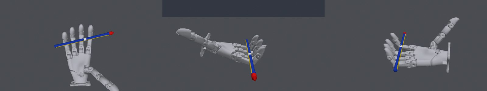

Pen Spinning
Spin a pen end over end around the fingers for three full counterclockwise revolutions, then hold it.
Pen
Awaiting next submission- Activity
- no evaluation running live
- Last API call
- budget · last-known
- Hypothesis
- The proven encoder brake and pose latch, scheduled just after the official third revolution, can preserve1080 and complete the final hold.
- Latest
- s23 · · success 1.00
- Best score
- 1.00 · s23
- Budget
- 23 / 100 used
- Last change
- ↑ improved vs s22
- Updated
Agent session state is not publicly monitored; activity shows target records and API calls only.
Task

Target environment at episode start (top, left and right cameras)
Experiment timeline
Every target submission, newest first.
s23success 1.00The proven encoder brake and pose latch, scheduled just after the official third revolution, can preserve1080 and complete the final hold.
Hypothesis
The proven encoder brake and pose latch, scheduled just after the official third revolution, can preserve1080 and complete the final hold.
improvement · intent i23 recorded · parent s22
Change
Keep all s22 replay targets and hardware arrays unchanged. Add scheduled brake activation at5.24s, using q-2(Kd/Kp)qd for50ms/until slow, then latch measured joint pose.
s22 officially completes three turns by5.03s and remains retained through5.24. Nominal actual-package hold ends1109.89deg,omega.000381,centre.00001794,contact everyfinalstep. All16 actual-package state perturbations pass strict finalhold and hardware(maxspeed.4064). Full local start still mismatches known target prefix; official evaluation is decisive.
Target result
success score 1.00
milestones reached: 10 / 10
hardware compliant · runtime valid · tm-2 · sv-2.3
complete rollout
Code change
revision f72ed610f832 · uncommitted changes · diff vs 68c5304168c3…
old_700_validation.json, research/hold_720_validation.json, research/hold_740_validation.json, research/hold_760_validation.json, research/hold_780_validation.json, research/hold_800_validation.json, research/hold_s22_a524/, research/kinematic_fit7_s03.json, research/kinematic_fit_s03.json, research/kinematic_replay.so, research/local_evaluations.jsonl, research/local_hold_check.json, research/local_initial.png, research/native_noself_replay.json, research/native_noself_replay_with_self.json, research/native_teacher_replay_hw.json, research/observer_current_eval.json, research/observer_direct_nominal/, research/observer_direct_nominal_current.json, research/observer_direct_random/, research/observer_direct_random_current.json, research/observer_fixed_mixture/, research/observer_prior/, research/observer_prior_current.json, research/observer_prior_initial.json, research/observer_v1/, research/observer_v1_u600.json, research/pose_fit_s03_dense.json, research/pose_fit_s03_start.json, research/ppo_contact/, research/ppo_contact_eval_initial.json, research/ppo_contact_eval_u40.json, research/ppo_damped_contact/, research/ppo_gait/, research/ppo_grasps/, research/ppo_grip_regions/, research/ppo_recovery16/, research/ppo_recovery32_random/, research/ppo_recovery34/, research/ppo_recovery37/, research/ppo_recovery37_transfer/, research/ppo_recovery_s14_38/, research/ppo_recovery_s15_39/, research/ppo_recovery_s15_39_fit/, research/ppo_recovery_s15_40/, research/ppo_recovery_s16_23/, research/ppo_recovery_s17_42/, research/ppo_recovery_s17_42_explore/, research/ppo_recovery_s18_27/…
Local result
{"scope": "Official three-turn prefix unchanged through5.24s; local camera-conditioned final-hold validation", "anchored": {"local_only": true, "package": "candidate_final_brake_s23", "seed": 59, "max_retained_rotation_deg": 1111.2480826969331, "retained_seconds": 6.76, "final_rotation_deg": 1109.8852655961007, "max_speed_ratio": 0.4047269629540075, "mean_inference_ms": 0.01826043784141006, "max_inference_ms": 0.1264749989786651, "final_position": [-0.11125862038026457, -0.022194156564579254, 0.28029499241725553], "start_step": 2620, "evidence_scope": "camera-conditioned suffix", "milestone_times_s": {"90": 5.2410000000000005, "180": 5.2410000000000005, "360": 1.51, "540": 5.2410000000000005, "720": 3.18, "900": 5.2410000000000005, "1080": 5.03}, "final_hold": {"max_centre_speed_mps": 1.7941102928462797e-05, "max_angular_speed_radps": 0.00038082460058911597, "max_hand_gap_m": -0.0009074555500632824, "min_net_rotation_deg": 1109.8852655961007}, "local_success_candidate": false, "local_suffix_success_candidate": true}, "fixed_start": {"retained_seconds": 1.693, "max_retained_rotation_deg": 430.600688052165, "max_speed_ratio": 0.7592244075284665, "local_success_candidate": false}, "actual_package_perturbations": {"local_only": true, "actual_package": "candidate_final_brake_s23", "worlds": 16, "seed": 882, "max_speed_ratio": 0.4063996463067569, "max_position_excess_rad": 0, "hardw…Comparison
↑ improved vs s22 (previous) · Δ +0.25
runtime / hardware / task status
gained: hold: after +1080: contact, still, 0.25 s, hold: final 0.5 s still in the hand, hold: final 1.0 s: >= +1080, still, contact every step
↑ improved vs s22 (best before) · Δ +0.25
runtime / hardware / task status
gained: hold: after +1080: contact, still, 0.25 s, hold: final 0.5 s still in the hand, hold: final 1.0 s: >= +1080, still, contact every step
Agent's diagnosis
Preserving the proven three-turn replay and scheduling the tested encoder damping/latch at5.24s prevents the extra gait from undoing rotation. Final1s measured min1107.22deg,centre max.00331m/s,fullangular max.04083rad/s,contact every frame.
worked: OFFICIAL FULL SUCCESS,score1.0 bounds[1,1],all milestonescertain. Three turns1.51/3.18/5.03s; still-contact quartersecond at5.51 and final1s hold passed. RetainedALL12s,hardware compliant maxspeed.8003,runtime6000valid.
failed: No official task failure. Local full-start dynamics remains mismatched before1.693s; this is an identified simulator limitation, not a claim of complete sim-to-target fidelity.
evidence: feedback/s23/<experiment>4_s23/sensor/sensor_report.json; final sensor tracks; exact verified archive artifacts/s23_policy.tar.gz SHAec4852a940f2f5997c10a7e91a34383a6e0095081c398f2d59e4092c365ba478.
reflection recorded
Decision
keep Goal achieved. Preserve s23 as the successful official policy; no further target submissions required.
next: Archive final policy, official evidence, research history and source revision; close the completed research objective.
policy d51340e197fc · package ec4852a940f2 · received · finished
s22failure 0.75The third-turn replay was halted by a conservative guard at.8005 of the speed limit; a locally stress-validated.85 trigger may permit progress while remaining hardware compliant.
Hypothesis
The third-turn replay was halted by a conservative guard at.8005 of the speed limit; a locally stress-validated.85 trigger may permit progress while remaining hardware compliant.
improvement · intent i22 recorded · parent s21
Change
Keep all6000 s21 replay targets and published hardware arrays identical; change only internal braking trigger.8 to.85. Braking law and final latch unchanged.
s21 retained12s and was hardware compliant but stopped3.5s. Revised actual-package stepstress max.8646 and16 reconstruction perturbations all hardwarecompliant(max.89974,no positionexcess),4/16 full suffixsuccesses. Nominal third5.246 withfinalhold. Full fixed-start model still mismatches known prefix; no robust target success claimed.
Target result
failure score 0.75
milestones reached: 7 / 10
hardware compliant · runtime valid · tm-2 · sv-2.3
complete rollout
Code change
revision 68c5304168c3 · uncommitted changes · diff vs 3de52ca9dc4c…
tion.json, research/hold_700_validation.json, research/hold_720_validation.json, research/hold_740_validation.json, research/hold_760_validation.json, research/hold_780_validation.json, research/hold_800_validation.json, research/kinematic_fit7_s03.json, research/kinematic_fit_s03.json, research/kinematic_replay.so, research/local_evaluations.jsonl, research/local_hold_check.json, research/local_initial.png, research/native_noself_replay.json, research/native_noself_replay_with_self.json, research/native_teacher_replay_hw.json, research/observer_current_eval.json, research/observer_direct_nominal/, research/observer_direct_nominal_current.json, research/observer_direct_random/, research/observer_direct_random_current.json, research/observer_fixed_mixture/, research/observer_prior/, research/observer_prior_current.json, research/observer_prior_initial.json, research/observer_v1/, research/observer_v1_u600.json, research/pose_fit_s03_dense.json, research/pose_fit_s03_start.json, research/pose_fit_s21_anchor40.json, research/ppo_contact/, research/ppo_contact_eval_initial.json, research/ppo_contact_eval_u40.json, research/ppo_damped_contact/, research/ppo_gait/, research/ppo_grasps/, research/ppo_grip_regions/, research/ppo_recovery16/, research/ppo_recovery32_random/, research/ppo_recovery34/, research/ppo_recovery37/, research/ppo_recovery37_transfer/, research/ppo_recovery_s14_38/, research/ppo_recovery_s15_39/, research/ppo_recovery_s15_39_fit/, research/ppo_recovery_s15_40/, research/ppo_recovery_s16_23/, research/ppo_recovery_s17_42/, research/ppo_recovery_s17_42_explor…
Local result
{"scope": "Identical s21 target sequence; controlled supervisor threshold change only", "anchored": {"local_only": true, "package": "candidate_guard85_s22", "seed": 59, "max_retained_rotation_deg": 1317.583941080299, "retained_seconds": 8.700000000000001, "final_rotation_deg": 1317.4903910873347, "max_speed_ratio": 0.7536178249213936, "mean_inference_ms": 0.013581521176176423, "max_inference_ms": 0.06957300138310529, "final_position": [-0.06741760505578977, -0.025347486869106782, 0.309789006052417], "start_step": 1650, "evidence_scope": "camera-conditioned suffix", "milestone_times_s": {"90": 3.301, "180": 3.301, "360": 1.51, "540": 3.301, "720": 3.18, "900": 4.5120000000000005, "1080": 5.246}, "final_hold": {"max_centre_speed_mps": 1.1646396731370427e-05, "max_angular_speed_radps": 0.0012552163005303638, "max_hand_gap_m": -0.0009049628203654796, "min_net_rotation_deg": 1317.4903910873347}, "local_success_candidate": false, "local_suffix_success_candidate": true}, "fixed_start": {"retained_seconds": 1.693, "max_retained_rotation_deg": 430.600688052165, "max_speed_ratio": 0.7592244075284665, "local_success_candidate": false}, "actuator_step_stress_max_speed": 0.864597989922516, "actual_package_perturbations": {"local_only": true, "actual_package": "candidate_guard85_s22", "worlds": 16, "seed": 882, "max_speed_ratio": 0.8997417171713704, "max_position_excess_rad": 0, "hardware_c…Comparison
↑ improved vs s21 (previous) · Δ +0.20
score bounds do not overlap
gained: sustain: +1080 deg within 3.0 s of the second, sustain: >= +900 deg
↑ improved vs s20 (best before) · Δ +0.20
score bounds do not overlap
gained: sustain: +1080 deg within 3.0 s of the second, sustain: >= +900 deg
Agent's diagnosis
Rotation skill now meets timing, but continuing gait past third turn undoes progress. Reuse proven encoder damping-and-latch behavior as scheduled final catch immediately after1080.
worked: FIRST CERTAIN OFFICIAL THIRD REVOLUTION:1.51,3.18,5.03s; score.75 exact bounds,hardware compliant maxspeed.8047,runtime6000valid. Raised.85 guard never activated and removed premature stop.
failed: Final hold absent; heading peaks1117deg then reverses, tilt retention failure5.73s. Net final1050.9deg, full task incomplete.
evidence: feedback/s22/<experiment>4_s22/sensor/sensor_report.json; tracks1112.5deg/0.4tilt at5.2 and1112.1deg/0.3tilt at5.5 before loss; no guard command divergence.
reflection recorded
Decision
keep New best compliant policy score.75; preserve all three-turn prefix. Stop third-turn spin training as primary focus and validate a secure final hold.
next: Reconstruct the retained post-third-turn pose, compare hold timing and scheduled joint braking locally, then evaluate final hold.
policy 48ba6199e1e4 · package 120337f18c43 · received · finished
s21failure 0.55A recovery trained from the observed pose immediately after the second revolution can avoid reversal and complete the third by6.18s.
Hypothesis
A recovery trained from the observed pose immediately after the second revolution can avoid reversal and complete the third by6.18s.
experimental · intent i21 recorded · parent s20
Change
Preserve exact s20 targets through3.3s; deploy frozen recovery_s20_33 update20 continuation, then hold at6.2s with the unchanged encoder guard.
Narrow pre-impact RGB-D velocity fit and fitted pen law. Exact conditioned package reaches1080at5.246 and retained finalhold net1317deg,omega.00126,maxspeed.754. Independent6/64 full successes; alternate contact models still fail, sometimes unsafely without guard. Full fixed-start local model still mismatches known prefix. This is an exploratory continuation.
Target result
failure score 0.55
milestones reached: 5 / 10
hardware compliant · runtime valid · tm-2 · sv-2.3
complete rollout
Code change
revision 3de52ca9dc4c · uncommitted changes · diff vs 6d7997019b08…
earch/guard_stress_validation.json, research/history_snapshot.json, research/hold_620_validation.json, research/hold_640_validation.json, research/hold_660_validation.json, research/hold_680_validation.json, research/hold_700_validation.json, research/hold_720_validation.json, research/hold_740_validation.json, research/hold_760_validation.json, research/hold_780_validation.json, research/hold_800_validation.json, research/kinematic_fit7_s03.json, research/kinematic_fit_s03.json, research/kinematic_replay.so, research/local_evaluations.jsonl, research/local_hold_check.json, research/local_initial.png, research/native_noself_replay.json, research/native_noself_replay_with_self.json, research/native_teacher_replay_hw.json, research/observer_current_eval.json, research/observer_direct_nominal/, research/observer_direct_nominal_current.json, research/observer_direct_random/, research/observer_direct_random_current.json, research/observer_fixed_mixture/, research/observer_prior/, research/observer_prior_current.json, research/observer_prior_initial.json, research/observer_v1/, research/observer_v1_u600.json, research/pose_fit_s03_dense.json, research/pose_fit_s03_start.json, research/ppo_contact/, research/ppo_contact_eval_initial.json, research/ppo_contact_eval_u40.json, research/ppo_damped_contact/, research/ppo_gait/, research/ppo_grasps/, research/ppo_grip_regions/, research/ppo_recovery16/, research/ppo_recovery32_random/, research/ppo_recovery34/, research/ppo_recovery37/, research/ppo_recovery37_transfer/, research/ppo_recovery_s14_38/, research/ppo_recovery_s15_39/, res…
Local result
{"scope": "Observed successful two-turn prefix plus camera-conditioned third-turn continuation", "anchored": {"local_only": true, "package": "candidate_third_s21", "seed": 59, "max_retained_rotation_deg": 1317.583941080299, "retained_seconds": 8.700000000000001, "final_rotation_deg": 1317.4903910873347, "max_speed_ratio": 0.7536178249213936, "mean_inference_ms": 0.02485028553042218, "max_inference_ms": 3.0577569996239617, "final_position": [-0.06741760505578977, -0.025347486869106782, 0.309789006052417], "start_step": 1650, "evidence_scope": "camera-conditioned suffix", "milestone_times_s": {"90": 3.301, "180": 3.301, "360": 1.51, "540": 3.301, "720": 3.18, "900": 4.5120000000000005, "1080": 5.246}, "final_hold": {"max_centre_speed_mps": 1.1646396731370427e-05, "max_angular_speed_radps": 0.0012552163005303638, "max_hand_gap_m": -0.0009049628203654796, "min_net_rotation_deg": 1317.4903910873347}, "local_success_candidate": false, "local_suffix_success_candidate": true}, "fixed_start": {"retained_seconds": 1.693, "max_retained_rotation_deg": 430.600688052165, "max_speed_ratio": 0.7592244075284665, "local_success_candidate": false}, "independent_ensemble": {"rank": 0, "candidate": 0, "successes": 6, "worlds": 64, "rotation_min_deg": 754.3963521982929, "rotation_q20_deg": 787.3621395393193, "rotation_median_deg": 878.901715692705, "max_speed_ratio": 0.7580207427201471, "nominal":…Comparison
= tied vs s20 (previous) · Δ +0.00
identical status and score bounds
= tied vs s20 (best before) · Δ +0.00
identical status and score bounds
Agent's diagnosis
The conservative .8-limit supervisor, not observed retention loss, halted this candidate. A modest threshold increase may let the trajectory proceed; hardware limits remain unchanged and the revised supervisor needs stress/perturbation checks before submission.
worked: Preserved first1.51 and second3.18; retained the pen for all12s, maxdrop.008m,maxtravel.0566m,hardware compliant maxspeed.8005,runtime6000valid.
failed: Score remains.55 and maxrotation760.5deg. Encoder safety guard triggered3.5s and latched a hold, preventing the planned third turn.
evidence: feedback/s21/<experiment>4_s21/sensor/sensor_report.json; first command divergence from planned replay atstep1750; maxjoint ratio.8005 and no not_retained event.
reflection recorded
Decision
keep Keep as safe retained12s policy and known successful prefix. Objective still incomplete; official bestscore.55.
next: Test guard threshold.85 under actuator step stress and reconstructed-state perturbations, then evaluate otherwise identical targets if hardware checks pass.
policy e8cfe874c43c · package 550e4bd5f37d · received · finished
s20failure 0.55Stronger tilt-trained recovery can complete the second turn under the contact law that predicts the s19 failure most closely.
Hypothesis
Stronger tilt-trained recovery can complete the second turn under the contact law that predicts the s19 failure most closely.
experimental · intent i20 recorded · parent s19
Change
Keep identical s18/s19 prefix through2.7s; use recovery_s18_27 update40 trained with stronger tilt penalty and reset exploration, then hold at5s. Keep speed guard.
Conditioned exact-package720at3.068,1080at4.579,stablehold,maxspeed.722. Fitted pen-law diagnostic independently predicts s19 retention3.198s versus actual3.18; under that law s19 has0/16 second turns and this policy15/16. Full task is not robust across contact laws; official evaluation remains decisive.
Target result
failure score 0.55
milestones reached: 5 / 10
hardware compliant · runtime valid · tm-2 · sv-2.3
complete rollout
Code change
revision 6d7997019b08 · uncommitted changes · diff vs 6d7997019b08…
tion.json, research/hold_720_validation.json, research/hold_740_validation.json, research/hold_760_validation.json, research/hold_780_validation.json, research/hold_800_validation.json, research/kinematic_fit7_s03.json, research/kinematic_fit_s03.json, research/kinematic_replay.so, research/local_evaluations.jsonl, research/local_hold_check.json, research/local_initial.png, research/native_noself_replay.json, research/native_noself_replay_with_self.json, research/native_teacher_replay_hw.json, research/observer_current_eval.json, research/observer_direct_nominal/, research/observer_direct_nominal_current.json, research/observer_direct_random/, research/observer_direct_random_current.json, research/observer_fixed_mixture/, research/observer_prior/, research/observer_prior_current.json, research/observer_prior_initial.json, research/observer_v1/, research/observer_v1_u600.json, research/pose_fit_s03_dense.json, research/pose_fit_s03_start.json, research/pose_fit_s17_anchor42.json, research/pose_fit_s18_anchor27.json, research/ppo_contact/, research/ppo_contact_eval_initial.json, research/ppo_contact_eval_u40.json, research/ppo_damped_contact/, research/ppo_gait/, research/ppo_grasps/, research/ppo_grip_regions/, research/ppo_recovery16/, research/ppo_recovery32_random/, research/ppo_recovery34/, research/ppo_recovery37/, research/ppo_recovery37_transfer/, research/ppo_recovery_s14_38/, research/ppo_recovery_s15_39/, research/ppo_recovery_s15_39_fit/, research/ppo_recovery_s15_40/, research/ppo_recovery_s16_23/, research/ppo_recovery_s17_42/, research/ppo_recovery_s17_42_expl…
Local result
{"scope": "Conditioned continuation at2.7s; same prefix as s19, stronger tilt-trained teacher", "anchored": {"local_only": true, "package": "candidate_tilt_recatch_s20", "seed": 59, "max_retained_rotation_deg": 1130.3213345650915, "retained_seconds": 9.3, "final_rotation_deg": 1129.75878032861, "max_speed_ratio": 0.7219849557215179, "mean_inference_ms": 0.012288795915083028, "max_inference_ms": 0.04468200131668709, "final_position": [-0.12678411426332326, -0.0052212381013781685, 0.2930208885216991], "start_step": 1350, "evidence_scope": "camera-conditioned suffix", "milestone_times_s": {"90": 2.701, "180": 2.701, "360": 1.51, "540": 2.701, "720": 3.068, "900": 3.9850000000000003, "1080": 4.579000000000001}, "final_hold": {"max_centre_speed_mps": 0.0001632989615601587, "max_angular_speed_radps": 0.02471442285024761, "max_hand_gap_m": -0.001457160390711205, "min_net_rotation_deg": 1129.75878032861}, "local_success_candidate": false, "local_suffix_success_candidate": true}, "fixed_start": {"retained_seconds": 1.693, "max_retained_rotation_deg": 430.600688052165, "max_speed_ratio": 0.7257253378394962, "local_success_candidate": false}, "independent_ensemble": {"rank": 0, "candidate": 0, "successes": 10, "worlds": 64, "rotation_min_deg": 735.9149496662945, "rotation_q20_deg": 760.2196399994881, "rotation_median_deg": 761.8395191599402, "max_speed_ratio": 0.725725337839497, "nominal…Comparison
↑ improved vs s19 (previous) · Δ +0.10
score bounds do not overlap
gained: sustain: +720 deg within 3.0 s of the first
↑ improved vs s11 (best before) · Δ +0.10
score bounds do not overlap
gained: sustain: +720 deg within 3.0 s of the first
Agent's diagnosis
Stronger tilt-trained recovery crosses the second-turn barrier, as the independently fitted pen-law comparison predicted, but continuation enters the wrong catch phase and reverses. Reconstruct immediately after second turn to train the third before6.18s.
worked: FIRST CERTAIN OFFICIAL SECOND REVOLUTION at3.18s, first1.51s; score.55 exact bounds, retained5.03s,hardware compliant maxspeed.7784,runtime6000 valid. Guard never activated.
failed: Reverses after758deg near3.4s, never reaches900 while retained or third1080; tilt fails5.03s. Full task remains incomplete.
evidence: feedback/s20/<experiment>4_s20/sensor/sensor_report.json; tracks742.3deg tilt1.9at3.3 and758.4deg tilt6.7at3.4 before reversal; research/compare_s19_s20_contact/comparison.json
reflection recorded
Decision
keep New best hardware-compliant official policy score.55. Preserve exact successful prefix; objective not complete.
next: RGB-D reconstruction at3.3s, then train a tilt-safe third-turn recovery using observed second-turn deadline6.18s.
policy c9f2eb041949 · package 322a15557806 · received · finished
s19failure 0.45Replanning from the flat s18 pose at2.7s can prevent its tilt failure and complete the almost-finished second turn.
Hypothesis
Replanning from the flat s18 pose at2.7s can prevent its tilt failure and complete the almost-finished second turn.
experimental · intent i19 recorded · parent s18
Change
Preserve exact s18 targets through2.7s, then replay an object-aware local continuation from the reconstructed full pose, with a stable5.0s hold and unchanged encoder guard.
Actual package conditioned720at3.066,1080at4.499,retained final hold,maxspeed.720. All64 independent local reconstructions reach720 on time,7/64 full successes. Full fixed-start local prefix still mismatches target; only official evaluation can establish progress.
Target result
failure score 0.45
milestones reached: 4 / 10
hardware compliant · runtime valid · tm-2 · sv-2.3
complete rollout
Code change
revision 6d7997019b08 · uncommitted changes · diff vs 6d7997019b08…
_640_validation.json, research/hold_660_validation.json, research/hold_680_validation.json, research/hold_700_validation.json, research/hold_720_validation.json, research/hold_740_validation.json, research/hold_760_validation.json, research/hold_780_validation.json, research/hold_800_validation.json, research/kinematic_fit7_s03.json, research/kinematic_fit_s03.json, research/kinematic_replay.so, research/local_evaluations.jsonl, research/local_hold_check.json, research/local_initial.png, research/native_noself_replay.json, research/native_noself_replay_with_self.json, research/native_teacher_replay_hw.json, research/observer_current_eval.json, research/observer_direct_nominal/, research/observer_direct_nominal_current.json, research/observer_direct_random/, research/observer_direct_random_current.json, research/observer_fixed_mixture/, research/observer_prior/, research/observer_prior_current.json, research/observer_prior_initial.json, research/observer_v1/, research/observer_v1_u600.json, research/pose_fit_s03_dense.json, research/pose_fit_s03_start.json, research/pose_fit_s17_anchor42.json, research/pose_fit_s18_anchor27.json, research/ppo_contact/, research/ppo_contact_eval_initial.json, research/ppo_contact_eval_u40.json, research/ppo_damped_contact/, research/ppo_gait/, research/ppo_grasps/, research/ppo_grip_regions/, research/ppo_recovery16/, research/ppo_recovery32_random/, research/ppo_recovery34/, research/ppo_recovery37/, research/ppo_recovery37_transfer/, research/ppo_recovery_s14_38/, research/ppo_recovery_s15_39/, research/ppo_recovery_s15_39_fit/, research/p…
Local result
{"scope": "Camera-conditioned2.7s continuation after exact observed s18 prefix", "anchored": {"local_only": true, "package": "candidate_recatch_s19", "seed": 59, "max_retained_rotation_deg": 1271.5393207422394, "retained_seconds": 9.3, "final_rotation_deg": 1271.418512068094, "max_speed_ratio": 0.7204475892624095, "mean_inference_ms": 0.013294856760166436, "max_inference_ms": 0.04747200000565499, "final_position": [-0.08310853421360048, -0.019713403333450792, 0.30692224915581695], "start_step": 1350, "evidence_scope": "camera-conditioned suffix", "milestone_times_s": {"90": 2.701, "180": 2.701, "360": 1.51, "540": 2.701, "720": 3.0660000000000003, "900": 3.7750000000000004, "1080": 4.4990000000000006}, "final_hold": {"max_centre_speed_mps": 3.167043215489452e-05, "max_angular_speed_radps": 0.005519285847218386, "max_hand_gap_m": -0.001459694021942434, "min_net_rotation_deg": 1271.418512068094}, "local_success_candidate": false, "local_suffix_success_candidate": true}, "fixed_start": {"retained_seconds": 1.693, "max_retained_rotation_deg": 430.600688052165, "max_speed_ratio": 0.7209709930047805, "local_success_candidate": false}, "selection_ensemble": {"rank": 7, "candidate": 5, "successes": 2, "worlds": 16, "rotation_min_deg": 755.0340013948336, "rotation_q20_deg": 771.2988704863585, "rotation_median_deg": 887.6818832386784, "max_speed_ratio": 0.7211233385274076, "nominal": [1…Comparison
= tied vs s18 (previous) · Δ +0.00
identical status and score bounds
= tied vs s11 (best before) · Δ +0.00
identical status and score bounds
Agent's diagnosis
Contact dynamics dominate remaining mismatch. Retention improves but the pen stalls and tilts; state uncertainty alone is an insufficient validation ensemble. Compare stronger tilt-trained recovery and alternative effective contact models.
worked: Retained until3.18s versus s18 3.02s; hardware compliant maxspeed.776 and6000 valid steps.
failed: Maximum retained700.18deg; second turn still not achieved, score.45. Guard never activated. All64 nominal-physics state perturbations reaching720 did not predict target progress.
evidence: feedback/s19/<experiment>4_s19/sensor/sensor_report.json; recorded tracks690.9deg/19.7tilt at2.9,696.6deg/33.2tilt at3.1; research/branch_s18_a27/independent64/ranking.json
reflection recorded
Decision
keep Retain stable prefix as evidence but do not promote policy over official score tie. Model ensemble success is not target success.
next: Evaluate trained low-tilt recovery from the same2.7s anchor and extend local comparisons to contact-law hypotheses.
policy 4187baf5898b · package 201a879412a8 · received · finished
s18failure 0.45Replanning from s16 at2.3s, before its catch reversal, permits a full second turn with substantially more timing margin.
Hypothesis
Replanning from s16 at2.3s, before its catch reversal, permits a full second turn with substantially more timing margin.
experimental · intent i18 recorded · parent s16
Change
Keep exact s16 first1150 commands, then use recovery_s16_23 update40 targets and a hold at4.8s, with the established encoder guard.
Conditioned actual-package local720at3.04,1080at4.229 and retained final hold; maxspeed0.666. Selection4/16 and independent18/64 full local successes, independentq20retained787deg. Full fixed-start local prefix still mismatches target and fails1.693s; therefore exploratory, not claimed target success.
Target result
failure score 0.45
milestones reached: 4 / 10
hardware compliant · runtime valid · tm-2 · sv-2.3
complete rollout
Code change
revision 6d7997019b08 · uncommitted changes · diff vs c71b1bcaaf25…
arch/full_hand_contact_fit.json, research/full_orientation_contact_fit.json, research/full_orientation_single_fit.json, research/gait_s05_validation.json, research/grasp_bank.npz.json, research/grip_stable_hw.json, research/grip_stable_replay.json, research/grip_stable_source.json, research/guard_s11_fixed_validation.json, research/guard_stress_validation.json, research/history_snapshot.json, research/hold_620_validation.json, research/hold_640_validation.json, research/hold_660_validation.json, research/hold_680_validation.json, research/hold_700_validation.json, research/hold_720_validation.json, research/hold_740_validation.json, research/hold_760_validation.json, research/hold_780_validation.json, research/hold_800_validation.json, research/kinematic_fit7_s03.json, research/kinematic_fit_s03.json, research/kinematic_replay.so, research/local_evaluations.jsonl, research/local_hold_check.json, research/local_initial.png, research/native_noself_replay.json, research/native_noself_replay_with_self.json, research/native_teacher_replay_hw.json, research/observer_current_eval.json, research/observer_direct_nominal/, research/observer_direct_nominal_current.json, research/observer_direct_random/, research/observer_direct_random_current.json, research/observer_fixed_mixture/, research/observer_prior/, research/observer_prior_current.json, research/observer_prior_initial.json, research/observer_v1/, research/observer_v1_u600.json, research/pose_fit_s03_dense.json, research/pose_fit_s03_start.json, research/ppo_contact/, research/ppo_contact_eval_initial.json, research/ppo_contac…
Local result
{"scope": "Camera-conditioned2.3s continuation after exact observed s16 prefix", "anchored": {"local_only": true, "package": "candidate_mid_catch_s18", "seed": 59, "max_retained_rotation_deg": 1274.5577015611418, "retained_seconds": 9.700000000000001, "final_rotation_deg": 1274.1078258786092, "max_speed_ratio": 0.6661975184578381, "mean_inference_ms": 0.013616240811240188, "max_inference_ms": 0.04663199797505513, "final_position": [-0.0807093235870068, -0.02160519896104578, 0.30810233941223275], "start_step": 1150, "evidence_scope": "camera-conditioned suffix", "milestone_times_s": {"90": 2.301, "180": 2.301, "360": 1.51, "540": 2.462, "720": 3.04, "900": 3.7110000000000003, "1080": 4.229}, "final_hold": {"max_centre_speed_mps": 7.5570951747259e-05, "max_angular_speed_radps": 0.007240136200707726, "max_hand_gap_m": -0.0016512675289814516, "min_net_rotation_deg": 1274.1078258786092}, "local_success_candidate": false, "local_suffix_success_candidate": true}, "fixed_start": {"retained_seconds": 1.693, "max_retained_rotation_deg": 430.600688052165, "max_speed_ratio": 0.707996804407908, "local_success_candidate": false}, "selection_ensemble": {"rank": 0, "candidate": 2, "successes": 4, "worlds": 16, "rotation_min_deg": 617.8771179202163, "rotation_q20_deg": 783.1753918803863, "rotation_median_deg": 819.2247332312006, "max_speed_ratio": 0.6726506271396011, "nominal": [1.0, 12.0, 127…Comparison
= tied vs s17 (previous) · Δ +0.00
identical status and score bounds
= tied vs s11 (best before) · Δ +0.00
identical status and score bounds
Agent's diagnosis
Replanning2.3s accelerates rotation but the catch twists the pen out of plane. Unlike s17, substantial second-turn timing margin remains, so a correction from the flat2.7s pose can slow and stabilize the catch.
worked: Reached714.43deg while retained, almost the second turn, with hardware compliant maxspeed.7552 and valid6000 steps. 540deg reached much earlier than older branch.
failed: Tilting exceeded45deg at3.02s before720; score remains.45 with exact bounds. Guard never activated.
evidence: feedback/s18/<experiment>4_s18/sensor/sensor_report.json; sensor tracks613deg tilt3.1at2.7,693.5deg tilt25.3at2.9,713deg tilt42.5at3.0. Optional video v1 shows genuine recorded full fixed-start local model mismatch.
reflection recorded
Decision
keep Keep observed prefix for further continuation. Full three-turn task remains unsolved; official score still.45.
next: Reconstruct2.7s with RGB-D full orientation and train a stronger tilt-penalized catch with generous remaining second-turn margin.
policy 2f65ae2c9bad · package 3e9985bb7735 · received · finished
s17failure 0.45A recovery learned from the last positively rotating retained s15 state can avoid the catch-induced reversal and finish the second turn by4.51s.
Hypothesis
A recovery learned from the last positively rotating retained s15 state can avoid the catch-induced reversal and finish the second turn by4.51s.
experimental · intent i17 recorded · parent s15
Change
Preserve all s15 targets through3.9s, then deploy frozen recovery_s15_39 update40 commands and the proven encoder braking guard.
Actual package conditioned validation has720at4.455,1080at5.72 and retained final hold, maxspeed0.701. Reconstruction ensemble3/32 full successes with20th-percentile retained732degrees. This is explicitly fragile and exploratory; full fixed-start local model still fails the known prefix.
Target result
failure score 0.45
milestones reached: 4 / 10
hardware compliant · runtime valid · tm-2 · sv-2.3
complete rollout
Code change
revision c71b1bcaaf25 · uncommitted changes · diff vs c71b1bcaaf25…
p_stable_replay.json, research/grip_stable_source.json, research/guard_s11_fixed_validation.json, research/guard_stress_validation.json, research/history_snapshot.json, research/hold_620_validation.json, research/hold_640_validation.json, research/hold_660_validation.json, research/hold_680_validation.json, research/hold_700_validation.json, research/hold_720_validation.json, research/hold_740_validation.json, research/hold_760_validation.json, research/hold_780_validation.json, research/hold_800_validation.json, research/kinematic_fit7_s03.json, research/kinematic_fit_s03.json, research/kinematic_replay.so, research/local_evaluations.jsonl, research/local_hold_check.json, research/local_initial.png, research/native_noself_replay.json, research/native_noself_replay_with_self.json, research/native_teacher_replay_hw.json, research/observer_current_eval.json, research/observer_direct_nominal/, research/observer_direct_nominal_current.json, research/observer_direct_random/, research/observer_direct_random_current.json, research/observer_fixed_mixture/, research/observer_prior/, research/observer_prior_current.json, research/observer_prior_initial.json, research/observer_v1/, research/observer_v1_u600.json, research/pose_fit_s03_dense.json, research/pose_fit_s03_start.json, research/pose_fit_s15_anchor39.json, research/pose_fit_s15_anchor40.json, research/pose_fit_s15_catch.json, research/pose_fit_s16_anchor23.json, research/ppo_contact/, research/ppo_contact_eval_initial.json, research/ppo_contact_eval_u40.json, research/ppo_damped_contact/, research/ppo_gait/, research/ppo_gr…
Local result
{"scope": "Camera-conditioned continuation with exact previously observed3.9s target prefix", "anchored": {"local_only": true, "package": "local_recovery_s15_39_v1", "seed": 59, "max_retained_rotation_deg": 1798.7214219012667, "retained_seconds": 8.1, "final_rotation_deg": 1796.1035307596942, "max_speed_ratio": 0.701020634411495, "mean_inference_ms": 0.013213605630925834, "max_inference_ms": 0.048122001317096874, "final_position": [-0.08247344589758056, -0.015865347942603383, 0.30031051052106617], "start_step": 1950, "evidence_scope": "camera-conditioned suffix", "milestone_times_s": {"90": 3.901, "180": 3.901, "360": 1.51, "540": 3.901, "720": 4.455, "900": 5.196, "1080": 5.72}, "final_hold": {"max_centre_speed_mps": 0.00013342703104345528, "max_angular_speed_radps": 0.012396730940469832, "max_hand_gap_m": -0.0017919629963195102, "min_net_rotation_deg": 1796.0267085914684}, "local_success_candidate": false, "local_suffix_success_candidate": true}, "fixed_start": {"retained_seconds": 1.705, "max_retained_rotation_deg": 436.7178950094309, "max_speed_ratio": 0.7078019470546767, "local_success_candidate": false}, "uncertainty": {"rank": 0, "candidate": 0, "successes": 3, "worlds": 32, "rotation_min_deg": 629.8463786555266, "rotation_q20_deg": 731.753128432442, "rotation_median_deg": 800.0766123376095, "max_speed_ratio": 0.742593847083571, "nominal": [1.0, 12.0, 1798.7841852443134…Comparison
↑ improved vs s16 (previous) · Δ +0.15
score bounds do not overlap
gained: sustain: >= +540 deg
= tied vs s11 (best before) · Δ +0.00
identical status and score bounds
Agent's diagnosis
Late branch improves timing and delays failure but contact still pushes the pen out of plane. More rotation after loss does not qualify. A local recovery immediately before the out-of-plane contact may stabilize it; earlier2.3branch offers more timing margin.
worked: Preserved exact3.9s prefix, reached675.87deg while retained and extended retention from4.24to4.35s. Hardware compliant maxspeed.7557 and runtime6000 valid.
failed: Score remains.45; tilt crossed45deg before720, which occurred only after retention loss. Guard never activated.
evidence: feedback/s17/<experiment>4_s17/sensor/sensor_report.json; sensor tracks show retainedmax675.87 and742deg at4.4s; commands match replay.
reflection recorded
Decision
keep Keep retained prefix for targeted reconstruction; full task remains unsolved and best official score.45.
next: Test selected2.3s continuation and reconstruct4.2s to learn tilt-safe catch before the deadline.
policy c254c0a3be5e · package 7290f5e74cb1 · received · finished
s16failure 0.30Recovery trained immediately after the first turn can prevent reversal and preserve enough time for the remaining turns.
Hypothesis
Recovery trained immediately after the first turn can prevent reversal and preserve enough time for the remaining turns.
experimental · intent i16 recorded · parent s11
Change
Preserve exact s10/s11 targets through1.6s, then use a randomized-reconstruction-selected recovery16 update40 catch with stationary hold and the encoder speed guard.
Nominal conditioned actual-package validation:720at2.935,1080at4.081,retained12,finalangular0.0031,maxspeed0.704. Selection6/16 and independent13/64 full local successes. Full fixed-start local model still fails the observed prefix; contact mismatch remains explicit.
Target result
failure score 0.30
milestones reached: 3 / 10
hardware compliant · runtime valid · tm-2 · sv-2.3
complete rollout
Code change
revision c71b1bcaaf25 · uncommitted changes · diff vs 85f0cbde6f69…
p_220_validation.json, research/ensemble_stop_240_validation.json, research/equilibrium_fit.json, research/equilibrium_single_fit.json, research/equilibrium_v2_fit.json, research/feedback_replay.so, research/full_hand_contact_fit.json, research/full_orientation_contact_fit.json, research/full_orientation_single_fit.json, research/gait_s05_validation.json, research/grasp_bank.npz.json, research/grip_stable_hw.json, research/grip_stable_replay.json, research/grip_stable_source.json, research/guard_s11_fixed_validation.json, research/guard_stress_validation.json, research/history_snapshot.json, research/hold_620_validation.json, research/hold_640_validation.json, research/hold_660_validation.json, research/hold_680_validation.json, research/hold_700_validation.json, research/hold_720_validation.json, research/hold_740_validation.json, research/hold_760_validation.json, research/hold_780_validation.json, research/hold_800_validation.json, research/kinematic_fit7_s03.json, research/kinematic_fit_s03.json, research/kinematic_replay.so, research/local_evaluations.jsonl, research/local_hold_check.json, research/local_initial.png, research/native_noself_replay.json, research/native_noself_replay_with_self.json, research/native_teacher_replay_hw.json, research/observer_current_eval.json, research/observer_direct_nominal/, research/observer_direct_nominal_current.json, research/observer_direct_random/, research/observer_direct_random_current.json, research/observer_fixed_mixture/, research/observer_prior/, research/observer_prior_current.json, research/observer_prior_initial.json, re…
Local result
{"scope": "camera-conditioned suffix with exact observed1.6s prefix", "anchored": {"local_only": true, "package": "candidate_early_recovery_s16", "seed": 59, "max_retained_rotation_deg": 1266.8147428971172, "retained_seconds": 10.4, "final_rotation_deg": 1266.4673585202197, "max_speed_ratio": 0.703502692454736, "mean_inference_ms": 0.01329622459637064, "max_inference_ms": 0.04594200072460808, "final_position": [-0.0791773869064886, -0.023724510178586185, 0.3062279816236868], "start_step": 800, "evidence_scope": "camera-conditioned suffix", "milestone_times_s": {"90": 1.601, "180": 1.601, "360": 1.51, "540": 2.3600000000000003, "720": 2.935, "900": 3.577, "1080": 4.0809999999999995}, "final_hold": {"max_centre_speed_mps": 2.7093630128832667e-05, "max_angular_speed_radps": 0.0031111334597991756, "max_hand_gap_m": -0.0017378589516774783, "min_net_rotation_deg": 1266.4673585202197}, "local_success_candidate": false, "local_suffix_success_candidate": true}, "fixed_start": {"retained_seconds": 1.693, "max_retained_rotation_deg": 430.600688052165, "max_speed_ratio": 0.707996804407908, "local_success_candidate": false}, "teacher_update": 40, "selected_generated_candidate": 4, "selection_ensemble": {"rank": 0, "candidate": 4, "successes": 6, "worlds": 16, "rotation_min_deg": 517.6594230623638, "rotation_q20_deg": 755.3034256352842, "rotation_median_deg": 833.2090864896636, "max_speed_r…Comparison
↓ regressed vs s15 (previous) · Δ -0.15
score bounds do not overlap
lost: sustain: >= +540 deg
↓ regressed vs s11 (best before) · Δ -0.15
score bounds do not overlap
lost: sustain: >= +540 deg
Agent's diagnosis
Early recovery still diverges at the catch and fails to maintain rotation. Guard never activated; this is contact transfer failure rather than supervisor intervention.
worked: Preserved first revolution at1.51 and all6000 valid runtime steps; hardware compliant maxspeed0.7645.
failed: Retention ended2.79s due drop; score0.30, below s15. The selected local full suffix did not transfer despite13/64 independent local successes.
evidence: feedback/s16/<experiment>4_s16/sensor/sensor_report.json; recorded commands match replay; research/recovery16_search_v1/independent64/ranking.json
reflection recorded
Decision
reject Reject full policy, retain camera and encoder evidence. Continue s15 retained prefix and consider a new reconstruction before the s16 drop only if it improves timing margin.
next: Validate newly trained s15 3.9s recovery that preserves about576 degrees with positive angular velocity before reversal.
policy 81ce528d8349 · package 13bf5945d3b2 · received · finished
s15failure 0.45Recovery trained from the earlier observed 3.2 s state over contact uncertainty can avoid the late stall and finish the second revolution before 4.51 s.
Hypothesis
Recovery trained from the earlier observed 3.2 s state over contact uncertainty can avoid the late stall and finish the second revolution before 4.51 s.
experimental · intent i15 recorded · parent s11
Change
Preserve exact s11 targets through 3.2 s; replay the frozen recovery32 update190 continuation, with the same encoder braking supervisor.
At 1kHz, camera-conditioned suffix reaches second4.385 and third5.549 with retained hold and max joint speed0.679. Full fixed-start model still diverges during previously observed prefix, so this remains an exploratory continuation rather than claimed full transfer.
Target result
failure score 0.45
milestones reached: 4 / 10
hardware compliant · runtime valid · tm-2 · sv-2.3
complete rollout
Code change
revision c71b1bcaaf25 · uncommitted changes · diff vs 85f0cbde6f69…
tion.json, research/ensemble_stop_220_validation.json, research/ensemble_stop_240_validation.json, research/equilibrium_fit.json, research/equilibrium_single_fit.json, research/equilibrium_v2_fit.json, research/feedback_replay.so, research/full_hand_contact_fit.json, research/full_orientation_contact_fit.json, research/full_orientation_single_fit.json, research/gait_s05_validation.json, research/grasp_bank.npz.json, research/grip_stable_hw.json, research/grip_stable_replay.json, research/grip_stable_source.json, research/guard_s11_fixed_validation.json, research/guard_stress_validation.json, research/history_snapshot.json, research/hold_620_validation.json, research/hold_640_validation.json, research/hold_660_validation.json, research/hold_680_validation.json, research/hold_700_validation.json, research/hold_720_validation.json, research/hold_740_validation.json, research/hold_760_validation.json, research/hold_780_validation.json, research/hold_800_validation.json, research/kinematic_fit7_s03.json, research/kinematic_fit_s03.json, research/kinematic_replay.so, research/local_evaluations.jsonl, research/local_hold_check.json, research/local_initial.png, research/native_noself_replay.json, research/native_noself_replay_with_self.json, research/native_teacher_replay_hw.json, research/observer_current_eval.json, research/observer_direct_nominal/, research/observer_direct_nominal_current.json, research/observer_direct_random/, research/observer_direct_random_current.json, research/observer_fixed_mixture/, research/observer_prior/, research/observer_prior_current.json, research…
Local result
{"scope": "camera-conditioned suffix, with exact previously observed target prefix", "anchored": {"local_only": true, "package": "local_recovery32_v2", "seed": 59, "max_retained_rotation_deg": 1834.6165141056838, "retained_seconds": 8.8, "final_rotation_deg": 1815.2062819732782, "max_speed_ratio": 0.6789134890008427, "mean_inference_ms": 0.012593297905451353, "max_inference_ms": 0.0465320008515846, "final_position": [-0.10265195555594066, -0.023306224916914656, 0.28134329019913573], "start_step": 1600, "evidence_scope": "camera-conditioned suffix", "milestone_times_s": {"90": 3.201, "180": 3.201, "360": 1.51, "540": 3.782, "720": 4.385, "900": 5.037, "1080": 5.549}, "final_hold": {"max_centre_speed_mps": 0.00030406960639551645, "max_angular_speed_radps": 0.02460104164617446, "max_hand_gap_m": -0.0024887839486617963, "min_net_rotation_deg": 1815.1228325214752}, "local_success_candidate": false, "local_suffix_success_candidate": true}, "fixed_start": {"retained_seconds": 1.705, "max_retained_rotation_deg": 436.7178950094309, "max_speed_ratio": 0.6841153505671735, "local_success_candidate": false}, "source_teacher_update": 190, "verified_prefix_seconds": 3.2, "deadline_second_revolution_seconds": 4.51, "local_second_deadline_margin_s": 0.125}Comparison
= tied vs s14 (previous) · Δ +0.00
identical status and score bounds
= tied vs s11 (best before) · Δ +0.00
identical status and score bounds
Agent's diagnosis
Earlier randomized recovery altered the catch but camera-conditioned nominal angular speed and tilt did not transfer. Need recovery earlier with larger second-turn deadline margin or a new observed-state continuation before the tilt event.
worked: Exact prefix retained first360 at1.51; reached540 and remained hardware compliant with max speed0.7346. All6000 runtime steps valid.
failed: Score remains0.45; retention lost4.24 due tilt, before second revolution. Guard never activated, so this failure is not caused by braking.
evidence: feedback/s15/<experiment>4_s15/sensor/sensor_report.json; q_target equals submitted replay throughout generated commands; research/branch_recovery32_v2/anchored_validation.json
reflection recorded
Decision
keep Keep as compliant retained-prefix evidence, not a full solution; best score remains0.45.
next: Evaluate early1.6 recovery with independently checked full local suffix; inspect late s15 state if another catch continuation is needed.
policy f99e25c3125a · package 19918331a3f6 · received · finished
s14failure 0.45Training a recovery from the measured later catch state can overcome the local controller stall and maintain forward rotation before the second-revolution deadline.
Hypothesis
Training a recovery from the measured later catch state can overcome the local controller stall and maintain forward rotation before the second-revolution deadline.
experimental · intent i14 recorded · parent s11
Change
Preserve the exact first3.4s of s11, initialize local training from dense public RGB-D orientation/position and encoder reconstruction, fine-tune the oracle with the4.51s second-revolution deadline, then deploy its stored continuation with the proven encoder braking guard.
The exact camera-conditioned native replay reaches720 at4.35s and1080 at5.57s, retains to12s and holds with angular speed0.0154rad/s. Full and suffix1kHz hardware checks pass; max speed ratio0.708. Full fixed-start local task validation still fails before the branch, so the evidence depends on the separately verified target prefix and does not establish robust transfer.
Target result
failure score 0.45
milestones reached: 4 / 10
hardware compliant · runtime valid · tm-2 · sv-2.3
complete rollout
Code change
revision 024856a2f8ff · uncommitted changes · diff vs 85f0cbde6f69…
research/feedback_replay.so, research/full_hand_contact_fit.json, research/full_orientation_contact_fit.json, research/full_orientation_single_fit.json, research/gait_s05_validation.json, research/grasp_bank.npz.json, research/grip_stable_hw.json, research/grip_stable_replay.json, research/grip_stable_source.json, research/guard_s11_fixed_validation.json, research/guard_stress_validation.json, research/history_snapshot.json, research/hold_620_validation.json, research/hold_640_validation.json, research/hold_660_validation.json, research/hold_680_validation.json, research/hold_700_validation.json, research/hold_720_validation.json, research/hold_740_validation.json, research/hold_760_validation.json, research/hold_780_validation.json, research/hold_800_validation.json, research/kinematic_fit7_s03.json, research/kinematic_fit_s03.json, research/kinematic_replay.so, research/local_evaluations.jsonl, research/local_hold_check.json, research/local_initial.png, research/native_noself_replay.json, research/native_noself_replay_with_self.json, research/native_teacher_replay_hw.json, research/observer_current_eval.json, research/observer_direct_nominal/, research/observer_direct_nominal_current.json, research/observer_direct_random/, research/observer_direct_random_current.json, research/observer_fixed_mixture/, research/observer_prior/, research/observer_prior_current.json, research/observer_prior_initial.json, research/observer_v1/, research/observer_v1_u600.json, research/pose_fit_s03_dense.json, research/pose_fit_s03_start.json, research/pose_fit_s11_anchor32.json, research/pos…
Local result
{"scope": "recovery trained from a public reconstructed retained state; conditioned validation only", "anchored": {"local_only": true, "package": "local_recovery34_v1", "seed": 59, "max_retained_rotation_deg": 1812.1809723737508, "retained_seconds": 8.6, "final_rotation_deg": 1802.3791410748136, "max_speed_ratio": 0.7074010523522032, "mean_inference_ms": 0.012302789079914746, "max_inference_ms": 0.05558200064115226, "final_position": [-0.09171753622473962, -0.021859284585786995, 0.291724920397836], "start_step": 1700, "evidence_scope": "camera-conditioned suffix", "milestone_times_s": {"90": 3.401, "180": 3.401, "360": 1.51, "540": 3.766, "720": 4.35, "900": 5.059, "1080": 5.57}, "final_hold": {"max_centre_speed_mps": 0.00019024862466144812, "max_angular_speed_radps": 0.015339456142316216, "max_hand_gap_m": -0.0023143899335909142, "min_net_rotation_deg": 1802.3130090714735}, "local_success_candidate": false, "local_suffix_success_candidate": true}, "fixed_start": {"retained_seconds": 1.705, "max_retained_rotation_deg": 436.7178950094309, "max_speed_ratio": 0.7074011976557165, "local_success_candidate": false}, "source_teacher_update": 60, "verified_prefix_seconds": 3.4, "deadline_second_revolution_seconds": 4.51}Comparison
↑ improved vs s13 (previous) · Δ +0.35
score bounds do not overlap
gained: spin_up: +360 deg within 3.0 s, spin_up: >= 180 deg, sustain: >= +540 deg
= tied vs s11 (best before) · Δ +0.00
identical status and score bounds
Agent's diagnosis
Camera-conditioned local recovery did not transfer its rotation speed: official heading only 553 degrees at 4.1 s while nominal suffix reaches 720 by 4.35. Guard explains later stall but not earlier slow progress. Local contact-model mismatch persists.
worked: Preserved first revolution at 1.51 s and reached 540 degrees; retention extended from s11 3.86 s to 8.12 s. Hardware compliant and runtime valid.
failed: Second revolution missed; maximum 579.96 degrees, score 0.45. Safety guard engaged at 4.102 s and latched pose; pen subsequently dropped at 8.12 s.
evidence: feedback/s14/<experiment>4_s14/sensor/sensor_report.json; encoder targets first differ from replay at step 2051; research/branch_recovery34_v1/anchored_validation.json
reflection recorded
Decision
keep Retain as longer stable prefix and camera evidence; best official compliant score remains tied with s11. Do not treat local suffix success as target success.
next: Train recovery earlier before the reversal, and reconstruct the late retained pose for a targeted fast continuation.
policy ceec1562a302 · package b50e4da3dee5 · received · finished
s13failure 0.10Reducing pen tilt and encouraging support on separated pen regions during contact-randomized training will improve catch transfer compared with the earlier fast spinning gait.
Hypothesis
Reducing pen tilt and encouraging support on separated pen regions during contact-randomized training will improve catch transfer compared with the earlier fast spinning gait.
improvement · intent i13 recorded · parent s11
Change
Use the stability-selected local oracle420 trained with two-region support reward, stronger tilt penalty and an early-contact uncertainty profile; deploy its stored native trajectory with the proven encoder speed guard.
The exact full fixed-start native package completes three revolutions by4.036s, retains12s and holds with maximum angular speed0.0114rad/s. Selected motion max tilt21.7degrees versus33.6degrees for an earlier teacher, and exact1kHz hardware checks pass with max speed ratio0.667. Local touch regions are reward-only; deployed inference uses only step and permitted encoder safety feedback.
Target result
failure score 0.10
milestones reached: 1 / 10
hardware compliant · runtime valid · tm-2 · sv-2.3
complete rollout
Code change
revision 024856a2f8ff · uncommitted changes · diff vs 85f0cbde6f69…
t_single_materials.json, research/ensemble_replay0_native.json, research/ensemble_stop_180_validation.json, research/ensemble_stop_200_hw.json, research/ensemble_stop_200_validation.json, research/ensemble_stop_220_validation.json, research/ensemble_stop_240_validation.json, research/equilibrium_fit.json, research/equilibrium_single_fit.json, research/equilibrium_v2_fit.json, research/feedback_replay.so, research/full_hand_contact_fit.json, research/full_orientation_contact_fit.json, research/full_orientation_single_fit.json, research/gait_s05_validation.json, research/grasp_bank.npz.json, research/grip_stable_hw.json, research/grip_stable_replay.json, research/grip_stable_source.json, research/guard_s11_fixed_validation.json, research/guard_stress_validation.json, research/history_snapshot.json, research/hold_620_validation.json, research/hold_640_validation.json, research/hold_660_validation.json, research/hold_680_validation.json, research/hold_700_validation.json, research/hold_720_validation.json, research/hold_740_validation.json, research/hold_760_validation.json, research/hold_780_validation.json, research/hold_800_validation.json, research/kinematic_fit7_s03.json, research/kinematic_fit_s03.json, research/kinematic_replay.so, research/local_evaluations.jsonl, research/local_hold_check.json, research/local_initial.png, research/native_noself_replay.json, research/native_noself_replay_with_self.json, research/native_teacher_replay_hw.json, research/observer_current_eval.json, research/observer_direct_nominal/, research/observer_direct_nominal_current.json, research/…
Local result
{"local_only": true, "package": "local_grip_stable", "seed": 59, "max_retained_rotation_deg": 2523.2480444078437, "retained_seconds": 12.0, "final_rotation_deg": 2522.7371148084912, "max_speed_ratio": 0.6662367617028313, "mean_inference_ms": 0.01279025052159947, "max_inference_ms": 0.04703299964603502, "final_position": [-0.09435018966993775, -0.01966921807024572, 0.2910052655204602], "start_step": 0, "evidence_scope": "full fixed-start rollout", "milestone_times_s": {"90": 0.5750000000000001, "180": 0.842, "360": 1.437, "540": 2.091, "720": 2.755, "900": 3.4170000000000003, "1080": 4.0360000000000005}, "final_hold": {"max_centre_speed_mps": 0.00035831556743656036, "max_angular_speed_radps": 0.011311458103795463, "max_hand_gap_m": -0.002579538558173688, "min_net_rotation_deg": 2522.676894076522}, "local_success_candidate": true}Comparison
↓ regressed vs s12 (previous) · Δ -0.20
score bounds do not overlap
lost: spin_up: +360 deg within 3.0 s, spin_up: >= 180 deg
↓ regressed vs s11 (best before) · Δ -0.35
score bounds do not overlap
lost: spin_up: +360 deg within 3.0 s, spin_up: >= 180 deg, sustain: >= +540 deg
Agent's diagnosis
Lower local tilt and separated support reward were insufficient proxies for target catch dynamics. The previously verified s11 prefix remains substantially better. Local controllers also stall when started at several later reconstructed catch states, indicating a need to learn a recovery from those states.
worked: All6000 runtime steps valid and hardware compliant; measured maximum joint speed ratio0.6955. Local exact full-task replay and lower-tilt checkpoint were preserved.
failed: Official score0.1, retention lost1.12s from centre drop beyond3cm, before the first full revolution. The lower-tilt local gait did not transfer.
evidence: feedback/s13/<experiment>4_s13/sensor/sensor_report.json
reflection recorded
Decision
reject Reject as a target improvement; preserve s11 as best compliant score0.45 and retain this alternative as local evidence only.
next: Fine-tune an oracle recovery initialized at the public reconstructed state after the verified540degree milestone, with correct prior joint targets and the second-revolution deadline.
policy 71d7f863f39b · package af4f98d5b768 · received · finished
s12failure 0.30Replanning immediately after the verified first revolution, before the later reversal, can preserve forward rotation and meet the second-revolution deadline.
Hypothesis
Replanning immediately after the verified first revolution, before the later reversal, can preserve forward rotation and meet the second-revolution deadline.
experimental · intent i12 recorded · parent s11
Change
Keep the first800 s10 commands exactly, reconstruct full pen motion from5ms-spaced public RGB-D observations around1.6s plus the encoder trajectory, and replay a new local-oracle continuation with the target-validated speed guard.
The exact package completes the remaining turns and final hold in nominal camera-conditioned native simulation: second2.919s, third4.095s, final angular speed0.0158rad/s and max joint speed ratio0.653. Both suffix and full fixed-start local hardware checks pass. The full fixed-start local task still fails, so this is an exploratory observed-state continuation, not a robust global simulation prediction.
Target result
failure score 0.30
milestones reached: 3 / 10
hardware compliant · runtime valid · tm-2 · sv-2.3
complete rollout
Code change
revision 85f0cbde6f69 · uncommitted changes · diff vs 85f0cbde6f69…
ngle_fit.json, research/equilibrium_v2_fit.json, research/feedback_replay.cpp, research/feedback_replay.so, research/full_hand_contact_fit.json, research/full_orientation_contact_fit.json, research/full_orientation_single_fit.json, research/gait_s05_validation.json, research/generate_anchored_replays.py, research/grasp_bank.npz.json, research/grip_regions_config.json, research/guard_s11_evidence.json, research/guard_s11_fixed_validation.json, research/guard_s11_hw.json, research/guard_stress_config.json, research/guard_stress_hw.json, research/guard_stress_validation.json, research/hold_620_validation.json, research/hold_640_validation.json, research/hold_660_validation.json, research/hold_680_validation.json, research/hold_700_validation.json, research/hold_720_validation.json, research/hold_740_validation.json, research/hold_760_validation.json, research/hold_780_validation.json, research/hold_800_validation.json, research/kinematic_fit7_s03.json, research/kinematic_fit_s03.json, research/kinematic_replay.so, research/local_evaluations.jsonl, research/local_hold_check.json, research/local_initial.png, research/native_noself_replay.json, research/native_noself_replay_with_self.json, research/native_teacher_replay_hw.json, research/observer_current_eval.json, research/observer_direct_nominal/, research/observer_direct_nominal_current.json, research/observer_direct_random/, research/observer_direct_random_current.json, research/observer_fixed_mixture/, research/observer_prior/, research/observer_prior_current.json, research/observer_prior_initial.json, research/observer_v1/…
Local result
{"scope": "sensor-conditioned suffix, not full fixed-start success", "anchored": {"local_only": true, "package": "local_branch_s10_safe", "seed": 59, "max_retained_rotation_deg": 2224.307238153997, "retained_seconds": 10.4, "final_rotation_deg": 2224.2690509566837, "max_speed_ratio": 0.6520557340002955, "mean_inference_ms": 0.012673970743260444, "max_inference_ms": 0.044051999793737195, "final_position": [-0.12202876679057818, -0.007837255387812823, 0.29416464175642015], "start_step": 800, "evidence_scope": "camera-conditioned suffix", "milestone_times_s": {"90": 1.601, "180": 1.601, "360": 1.51, "540": 2.361, "720": 2.919, "900": 3.599, "1080": 4.095000000000001}, "final_hold": {"max_centre_speed_mps": 9.663716370465869e-05, "max_angular_speed_radps": 0.015785042781593154, "max_hand_gap_m": -0.0013267649316515977, "min_net_rotation_deg": 2224.2690509566837}, "local_success_candidate": false, "local_suffix_success_candidate": true}, "fixed_start": {"retained_seconds": 1.692, "max_retained_rotation_deg": 430.23901720851336, "max_speed_ratio": 0.6841153505671735, "local_success_candidate": false}, "kinematic_fit": {"position_rms_m": 4.653473178986778e-05, "acceleration_world": [-1.514625776443968, -1.3707742629262152, 0.9402661406957338], "orientation_rms_rad": 0.0032724628934368686, "method": "local quadratic regression of RGB-D centres and relative full orientations"}, "initia…Comparison
↓ regressed vs s11 (previous) · Δ -0.15
score bounds do not overlap
lost: sustain: >= +540 deg
↓ regressed vs s11 (best before) · Δ -0.15
score bounds do not overlap
lost: sustain: >= +540 deg
Agent's diagnosis
A nominal locally successful continuation from the accurately reconstructed post-catch state is still not predictive of target contact transfer. The immediate catch state is sensitive and this branch did not remove the reversal. The later steady forward-motion prefix of s11 is a different possible branch point.
worked: Preserved verified first revolution1.51s; retained to3.92s with hardware compliant and valid6000-step runtime. The validated guard remained available and peak speed was0.7348 of limit.
failed: Net rotation reversed after the1.6s branch, never reached540degrees, and official score regressed to0.3. Tilt exceeded45degrees at3.92s.
evidence: feedback/s12/<experiment>4_s12/sensor/sensor_report.json
reflection recorded
Decision
reject Reject as an improvement; retain s11 as best compliant policy with score0.45. Preserve reconstruction and rollout evidence for contact diagnosis.
next: Test the lower-tilt spatially supported grasp policy trained over contact uncertainty, and reconstruct the later forward-motion segment of s11 for another possible continuation.
policy 737590f03082 · package c76100180697 · received · finished
s11failure 0.45An encoder-triggered braking supervisor can remove the late hardware speed violation of s10 while preserving its retained540degree prefix.
Hypothesis
An encoder-triggered braking supervisor can remove the late hardware speed violation of s10 while preserving its retained540degree prefix.
diagnostic · intent i11 recorded · parent s10
Change
Keep the s10 replay unchanged until any measured joint speed exceeds80percent of its published limit; then brake all joints with the published PD gains and latch a safe hold once speeds settle.
The supervisor would first trigger at3.972s on the public s10 encoder trace,36ms before its first violation and after all scored motion. Exact native12s hardware checks pass. A local step-response stress test is limited to86.5percent of joint speed with the guard versus an over-limit unprotected response. This diagnostic tests hardware compliance; it does not claim the full task is solved.
Target result
failure score 0.45
milestones reached: 4 / 10
hardware compliant · runtime valid · tm-2 · sv-2.3
complete rollout
Code change
revision 85f0cbde6f69 · uncommitted changes · diff vs 85f0cbde6f69…
uilibrium_fit.json, research/equilibrium_single_fit.json, research/equilibrium_v2_fit.json, research/feedback_replay.cpp, research/feedback_replay.so, research/full_hand_contact_fit.json, research/full_orientation_contact_fit.json, research/gait_s05_validation.json, research/generate_anchored_replays.py, research/grasp_bank.npz.json, research/grip_regions_config.json, research/guard_s11_evidence.json, research/guard_s11_fixed_validation.json, research/guard_s11_hw.json, research/guard_stress_config.json, research/guard_stress_hw.json, research/guard_stress_validation.json, research/hold_620_validation.json, research/hold_640_validation.json, research/hold_660_validation.json, research/hold_680_validation.json, research/hold_700_validation.json, research/hold_720_validation.json, research/hold_740_validation.json, research/hold_760_validation.json, research/hold_780_validation.json, research/hold_800_validation.json, research/kinematic_fit7_s03.json, research/kinematic_fit_s03.json, research/kinematic_replay.so, research/local_evaluations.jsonl, research/local_hold_check.json, research/local_initial.png, research/native_noself_replay.json, research/native_noself_replay_with_self.json, research/native_teacher_replay_hw.json, research/observer_current_eval.json, research/observer_direct_nominal/, research/observer_direct_nominal_current.json, research/observer_direct_random/, research/observer_direct_random_current.json, research/observer_fixed_mixture/, research/observer_prior/, research/observer_prior_current.json, research/observer_prior_initial.json, research/observer_v1/…
Local result
{"local_only": true, "source": "s10 documented measured encoder replay; controller counterfactual only", "first_guard_trigger_seconds": 3.972, "original_first_hardware_violation_seconds": 4.008, "first_braking_command_opposes_every_joint_velocity": true, "all_braking_targets_within_limits": true, "limitation": "Replay does not predict the counterfactual target dynamics after activation.", "native_guard_step_stress_max_speed_ratio": 0.864597989922516, "unprotected_step_stress_max_speed_ratio_500Hz": 2.3124956059663977, "native_full_12s_max_speed_ratio": 0.6841153505671735, "native_hardware_checks": "both stress and full12s exact1kHz compliant"}Comparison
↑ improved vs s10 (previous) · Δ +0.00
runtime / hardware / task status
↑ improved vs s09 (best before) · Δ +0.15
score bounds do not overlap
gained: sustain: >= +540 deg
Agent's diagnosis
The encoder-triggered braking guard removed the late speed violation without altering the scored prefix. It also limited the subsequent drop, but did not repair the earlier reversal or catch.
worked: Official score0.45 and exactbounds retained; first revolution1.51s and retention through3.86s match s10. Hardware is now compliant, with maximum measured joint speed ratio0.817 instead of1.0346; runtime valid6000steps.
failed: Still no second full revolution or final hold; tilt beyond45degrees at3.86s ends retention.
evidence: feedback/s11/<experiment>4_s11/sensor/sensor_report.json
reflection recorded
Decision
keep Preserve as the best fully compliant target policy (score0.45) and reuse the validated guard for subsequent candidates. Full task remains unsolved.
next: Keep the verified first1.6s and replan from dense RGB-D position/orientation and encoder kinematics before the reversal.
policy 57e301a000be · package e2a41934e23b · received · finished
s10failure 0.45Offline replanning from a camera-reconstructed state of a reproducible retained prefix can extend rotation beyond the failed catch, despite accumulated sim-to-target mismatch.
Hypothesis
Offline replanning from a camera-reconstructed state of a reproducible retained prefix can extend rotation beyond the failed catch, despite accumulated sim-to-target mismatch.
experimental · intent i10 recorded · parent s09
Change
Preserve the exact first550 commands of s09, reconstruct joint motion and full pen pose/velocity at1.1s from public RGB-D and encoders, and generate a new local-oracle continuation. Deploy only the stored position-target sequence.
The nominal camera-conditioned native suffix completes three revolutions and holds to12s with compliant1kHz hardware checks. Both suffix and full fixed-start local hardware tests pass. Full fixed-start local task validation fails at1.705s, and only1of16 native reconstructed-state tests succeeds, including nominal, so this is an exploratory prefix-extension experiment rather than a robust full-task prediction.
Target result
failure score 0.45
milestones reached: 4 / 10
hardware violation · runtime valid · tm-2 · sv-2.3
complete rollout
Code change
revision 85f0cbde6f69 · uncommitted changes · diff vs 6c168832ce26…
ntact_damping_fit.json, research/dynamic_contact_e4.json, research/dynamic_contact_p3.json, research/dynamic_contact_p6.json, research/dynamic_contact_single_materials.json, research/ensemble_replay0_native.json, research/ensemble_stop_180_validation.json, research/ensemble_stop_200_hw.json, research/ensemble_stop_200_validation.json, research/ensemble_stop_220_validation.json, research/ensemble_stop_240_validation.json, research/equilibrium_fit.json, research/equilibrium_single_fit.json, research/equilibrium_v2_fit.json, research/feedback_replay.cpp, research/feedback_replay.so, research/full_hand_contact_fit.json, research/full_orientation_contact_fit.json, research/gait_s05_validation.json, research/generate_anchored_replays.py, research/grasp_bank.npz.json, research/hold_620_validation.json, research/hold_640_validation.json, research/hold_660_validation.json, research/hold_680_validation.json, research/hold_700_validation.json, research/hold_720_validation.json, research/hold_740_validation.json, research/hold_760_validation.json, research/hold_780_validation.json, research/hold_800_validation.json, research/kinematic_fit7_s03.json, research/kinematic_fit_s03.json, research/kinematic_replay.so, research/local_evaluations.jsonl, research/local_hold_check.json, research/local_initial.png, research/native_noself_replay.json, research/native_noself_replay_with_self.json, research/native_teacher_replay_hw.json, research/observer_current_eval.json, research/observer_direct_nominal/, research/observer_direct_nominal_current.json, research/observer_direct_random/, research/ob…
Local result
{"evidence_scope": "camera-conditioned continuation, not a full fixed-start local success", "anchored": {"local_only": true, "package": "local_branch_s09_v1", "seed": 59, "max_retained_rotation_deg": 2223.3913450266896, "retained_seconds": 10.9, "final_rotation_deg": 2223.3913450266896, "max_speed_ratio": 0.6981517390055458, "mean_inference_ms": 0.0024390860505822893, "max_inference_ms": 0.031321000278694555, "final_position": [-0.12337152621423689, -0.0075790211774377746, 0.29109972038010395], "start_step": 550, "evidence_scope": "camera-conditioned suffix", "milestone_times_s": {"90": 1.101, "180": 1.101, "360": 1.581, "540": 2.329, "720": 2.947, "900": 3.552, "1080": 4.078}, "final_hold": {"max_centre_speed_mps": 4.085196081255856e-05, "max_angular_speed_radps": 0.007335872951754873, "max_hand_gap_m": -0.00150168073992066, "min_net_rotation_deg": 2223.3503431477634}, "local_success_candidate": false, "local_suffix_success_candidate": true}, "fixed_start": {"retained_seconds": 1.705, "max_retained_rotation_deg": 436.7178950094309, "local_success_candidate": false, "max_speed_ratio": 0.6841153505671735}, "native_reconstruction_uncertainty": {"successes": 1, "worlds": 16, "nominal_included": true, "rotation_q20_deg": 385.45493975942895}}Comparison
↓ regressed vs s09 (previous) · Δ +0.15
runtime / hardware / task status
gained: sustain: >= +540 deg
↓ regressed vs s09 (best before) · Δ +0.15
runtime / hardware / task status
gained: sustain: >= +540 deg
Agent's diagnosis
Replanning from public camera and encoder evidence materially extended the motion despite nominal-model fragility. Coarse temporal interpolation biased the initial vertical velocity; dense1.085-1.12s RGB-D reconstruction fits near-ballistic acceleration and gives a better velocity estimate. The unsafe tail requires a joint-encoder braking supervisor.
worked: Offline observed-state continuation extended target retention from1.49 to3.86s, preserved the first revolution at1.51s, and reached540degrees at3.65s. Official task score0.45, exact bounds.
failed: The second revolution was not completed. Rotation reversed after1.7s, then tilt exceeded45degrees at3.86s. A later ring MCP abduction speed violation occurred at4.008s (ratio1.0346), so this is not a hardware-compliant solution.
evidence: feedback/s10/<experiment>4_s10/sensor/sensor_report.json
reflection recorded
Decision
keep Keep the retained, hardware-compliant prefix as evidence and a branch point; reject the full policy as a final solution. Best fully compliant official policy remains s09.
next: Validate an encoder-based speed guard; reconstruct the post-first-revolution state before the reversal and generate a new continuation with dense local kinematics.
policy 42b1d07eb6dd · package 7625a9dd55e0 · received · finished
s09failure 0.30Eliminating the spurious local starting impulse through early-motion contact calibration will improve transfer of a locally complete pen-spinning trajectory.
Hypothesis
Eliminating the spurious local starting impulse through early-motion contact calibration will improve transfer of a locally complete pen-spinning trajectory.
improvement · intent i09 recorded · parent s08
Change
Fine-tune a local oracle with the early RGB-D fitted contact law and stronger tilt/grip rewards, use world-frame privileged angular velocity during training, and export its native continuous-PD trajectory with a9s stop.
The exact deployed replay completes three local revolutions at4.241s, retains for12s, and holds with maximum angular speed0.0061rad/s. The fitted starting equilibrium is within0.5mm of the stationary camera pose. Contact parameters are effective estimates and held-out long-motion mismatch remains a limitation.
Target result
failure score 0.30
milestones reached: 3 / 10
hardware compliant · runtime valid · tm-2 · sv-2.3
complete rollout
Code change
revision 6c168832ce26 · uncommitted changes · diff vs 6c168832ce26…
research/contact_probe_pyramidal_hw.json, research/contact_probe_s06_local.json, research/damped_teacher_hw.json, research/damped_teacher_replay.json, research/demo_montage.jpg, research/dynamic_contact_damping_fit.json, research/dynamic_contact_e4.json, research/dynamic_contact_p3.json, research/dynamic_contact_p6.json, research/dynamic_contact_single_materials.json, research/ensemble_replay0_native.json, research/ensemble_stop_180_validation.json, research/ensemble_stop_200_hw.json, research/ensemble_stop_200_validation.json, research/ensemble_stop_220_validation.json, research/ensemble_stop_240_validation.json, research/equilibrium_fit.json, research/equilibrium_single_fit.json, research/equilibrium_v2_fit.json, research/gait_s05_validation.json, research/grasp_bank.npz.json, research/hold_620_validation.json, research/hold_640_validation.json, research/hold_660_validation.json, research/hold_680_validation.json, research/hold_700_validation.json, research/hold_720_validation.json, research/hold_740_validation.json, research/hold_760_validation.json, research/hold_780_validation.json, research/hold_800_validation.json, research/kinematic_fit7_s03.json, research/kinematic_fit_s03.json, research/kinematic_replay.so, research/local_evaluations.jsonl, research/local_hold_check.json, research/local_initial.png, research/monitor_observer.py, research/monitor_residual.py, research/native_noself_replay.json, research/native_noself_replay_with_self.json, research/native_teacher_replay_hw.json, research/observer_current_eval.json, research/observer_direct_nominal/, research/obser…
Local result
{"local_only": true, "package": "local_damped_teacher", "seed": 59, "max_retained_rotation_deg": 2362.8969575578967, "retained_seconds": 12.0, "final_rotation_deg": 2362.8969575578967, "max_speed_ratio": 0.6863820575291245, "mean_inference_ms": 0.003128797819954343, "max_inference_ms": 0.03390100027900189, "final_position": [-0.07736164918290064, -0.023672065549529456, 0.31101255703445174], "milestone_times_s": {"90": 0.624, "180": 0.919, "360": 1.497, "540": 2.287, "720": 2.945, "900": 3.641, "1080": 4.241}, "final_hold": {"max_centre_speed_mps": 0.00012278763533345795, "max_angular_speed_radps": 0.006074098592976025, "max_hand_gap_m": -0.0018835626148072508, "min_net_rotation_deg": 2362.805451357185}, "local_success_candidate": true}Comparison
↑ improved vs s08 (previous) · Δ +0.30
score bounds do not overlap
gained: spin_up: +360 deg within 3.0 s, spin_up: >= 180 deg, spin_up: >= 90 deg
↑ improved vs s01 (best before) · Δ +0.30
score bounds do not overlap
gained: spin_up: +360 deg within 3.0 s, spin_up: >= 180 deg, spin_up: >= 90 deg
Agent's diagnosis
Early-motion contact calibration materially improved transfer: target first-revolution timing agrees closely with the native local prediction1.497s. Remaining mismatch appears in the catch or continuation near the cycle boundary, rather than the initial launch.
worked: Official first full revolution reached at1.46s; score0.3 with exact bounds[0.3,0.3], valid6000-step runtime and compliant hardware. This is the first certain target task milestone.
failed: Retention lost at1.49s due to tilt beyond45degrees, immediately after the first revolution; subsequent rotations do not count and there is no final hold.
evidence: feedback/s09/<experiment>4_s09/sensor/sensor_report.json
reflection recorded
Decision
keep Preserve this exact package as the best officially evaluated prefix. Continue research toward three retained revolutions and hold; do not call the task solved.
next: Measure full orientation and joint motion near1.0-1.49s, compare local and target contact transitions, then branch a revised continuation from the reproducible retained prefix.
policy 92462d3c320c · package 83f299c11b8f · received · finished
s08failure 0.00Selecting a trajectory by lower-tail retained rotation across uncertain contact models can improve early transfer relative to a complete trajectory selected in one model.
Hypothesis
Selecting a trajectory by lower-tail retained rotation across uncertain contact models can improve early transfer relative to a complete trajectory selected in one model.
experimental · intent i08 recorded · parent s07
Change
Replay the top trajectory from a 2048-world oracle generation and 48-candidate by32-model open-loop screen, stopping movement at2s and holding the final joint target.
The exact package reaches361 degrees at1.93s and retains the pen for12s in continuous native local simulation; it is a focused first-revolution test, not a predicted full-task solution. The full source replay reached406 degrees before dropping locally and the ensemble showed no full-task robust replay.
Target result
failure score 0.00 [0.00–0.10]
milestones reached: 0 / 10
hardware compliant · runtime valid · tm-2 · sv-2.3
complete rollout
Code change
revision 6c168832ce26 · uncommitted changes · diff vs 96b17686f073…
mble_stop_200/, local_ensemble_stop_220/, local_ensemble_stop_240/, local_hold_620/, local_hold_640/, local_hold_660/, local_hold_680/, local_hold_700/, local_hold_720/, local_hold_740/, local_hold_760/, local_hold_780/, local_hold_800/, local_native_teacher/, local_noself_teacher/, local_observer_package/, local_teacher_replay/, research/actor_s03_self_validation.json, research/actor_s03_validation.json, research/anchor_s03_plan.npz.json, research/baseline_equilibrium_fit.json, research/contact_fit_s02.json, research/contact_fit_s03.json, research/contact_probe_elliptic_config.json, research/contact_probe_elliptic_hw.json, research/contact_probe_pyramidal_config.json, research/contact_probe_pyramidal_hw.json, research/contact_probe_s06_local.json, research/demo_montage.jpg, research/dynamic_contact_e4.json, research/dynamic_contact_p3.json, research/dynamic_contact_p6.json, research/dynamic_contact_single_materials.json, research/ensemble_replay0_native.json, research/ensemble_stop_180_validation.json, research/ensemble_stop_200_hw.json, research/ensemble_stop_200_validation.json, research/ensemble_stop_220_validation.json, research/ensemble_stop_240_validation.json, research/equilibrium_fit.json, research/equilibrium_single_fit.json, research/equilibrium_v2_fit.json, research/gait_s05_validation.json, research/grasp_bank.npz.json, research/hold_620_validation.json, research/hold_640_validation.json, research/hold_660_validation.json, research/hold_680_validation.json, research/hold_700_validation.json, research/hold_720_validation.json, research/hold_740_validation.json,…
Local result
{"local_only": true, "package": "local_ensemble_stop_200", "seed": 59, "max_retained_rotation_deg": 399.89213862071114, "retained_seconds": 12.0, "final_rotation_deg": 399.89213862071114, "max_speed_ratio": 0.677555923639831, "mean_inference_ms": 0.0022932555120860343, "max_inference_ms": 0.02692199996090494, "final_position": [-0.1184219951651493, -0.022015877602571933, 0.26654294337809653], "milestone_times_s": {"90": 0.671, "180": 1.4020000000000001, "360": 1.93, "540": null, "720": null, "900": null, "1080": null}, "final_hold": {"max_centre_speed_mps": 0.0013479904192033204, "max_angular_speed_radps": 0.05814947219649536, "max_hand_gap_m": -2.5094830618200767e-06, "min_net_rotation_deg": 399.70414690220105}, "local_success_candidate": false}Comparison
~ inconclusive vs s07 (previous) · Δ +0.00
score bounds overlap
~ inconclusive vs s01 (best before) · Δ +0.00
score bounds overlap
Agent's diagnosis
The ensemble was insufficiently predictive. Target pen slides outward and tilts downward during the first0.6s while the nominal local policy anticipates a different contact transition. The initial equilibrium mismatch remains a stronger explanation than late solver history.
worked: Ensemble-ranked replay extended official retention to0.67s with approximately90 degrees near the failure boundary. Runtime valid and hardware compliant.
failed: Point score remains0; upper bound0.1 only. Tilt beyond45 degrees precedes any certain rotation milestone. Local one-revolution12s-retention result did not transfer.
evidence: feedback/s08/<experiment>4_s08/sensor/sensor_report.json
reflection recorded
Decision
reject Reject as a target solution; preserve the initial motion as additional calibration evidence.
next: Fit early stationary and short-horizon contact evidence, eliminate the artificial local starting impulse, and train a residual controller around a validated reference.
policy 623312960f24 · package bd45eb885e7e · received · finished
s07failure 0.00A full12s trajectory generated and revalidated under continuous native PD physics will transfer more reliably than trajectories generated with solver-history resets.
Hypothesis
A full12s trajectory generated and revalidated under continuous native PD physics will transfer more reliably than trajectories generated with solver-history resets.
improvement · intent i07 recorded · parent s05
Change
All20-joint trajectory from the independently trained local teacher. Continuous native1kHz validation reaches361/721/1081deg at1.694/3.925/5.708s, then holds final configuration after9s.
Local retention lasts12s, maximum speed0.652 of limit, all hardware checks pass. Final1s centre speed below0.00004m/s and angular speed below0.006rad/s, with continuous hand contact and net rotation above1630deg. This is the first locally complete spin-sustain-hold candidate; target contact uncertainty remains.
Target result
failure score 0.00
milestones reached: 0 / 10
hardware compliant · runtime valid · tm-2 · sv-2.3
complete rollout
Code change
revision 96b17686f073 · uncommitted changes · diff vs 59cf447c5f37…
h/object_free_hand_fit.json | 1379 +++++++++++++++++++++++++++ research/optimize.py | 3 +- research/prepare_contact_probe.py | 34 + research/search_actor.py | 2 +- research/sim.py | 19 +- research/static_contact_identification.json | 46 + research/static_identify.py | 49 + research/static_parameters_elliptic.json | 85 ++ research/static_parameters_pyramidal.json | 85 ++ research/train_ppo.py | 58 +- research/validate_policy.py | 15 +- research/warp_env.py | 30 +- 19 files changed, 1905 insertions(+), 39 deletions(-) untracked: MUJOCO_LOG.TXT, candidate_actor_s03/, candidate_contact_probe_s06/, candidate_gait_s05/, candidate_native_full_s07/, candidate_probe/, candidate_seed_u670/, candidate_teacher_scale_105/, candidate_teacher_scale_108/, candidate_teacher_scale_110/, candidate_teacher_scale_115/, candidate_transfer_350/, candidate_transfer_400/, local_hold_620/, local_hold_640/, local_hold_660/, local_hold_680/, local_hold_700/, local_hold_720/, local_hold_740/, local_hold_760/, local_hold_780/, local_hold_800/, local_native_teacher/, local_teacher_replay/, research/actor_s03_self_validation.json, research/actor_s03_validation.json, research/anchor_s03_plan.npz.json, research/contact_fit_s02.json, research/contact_fit_s03.json, research/contact_probe_elliptic_config.json, research/contact_probe_elliptic_hw.json, research/contact_probe_pyramidal_config.json, research/c…
Local result
{"local_only": true, "package": "local_native_teacher", "seed": 59, "max_retained_rotation_deg": 1631.114856718108, "retained_seconds": 12.0, "final_rotation_deg": 1631.114856718108, "max_speed_ratio": 0.6521588185528723, "mean_inference_ms": 0.0024382806674717963, "max_inference_ms": 0.02377099917794112, "final_position": [-0.07961772755380518, -0.024541451919097325, 0.3145168139414571], "milestone_times_s": {"90": 0.923, "180": 1.164, "360": 1.694, "540": 3.064, "720": 3.9250000000000003, "900": 4.992, "1080": 5.708}, "final_hold": {"max_centre_speed_mps": 3.6073462001006094e-05, "max_angular_speed_radps": 0.005126527040832424, "max_hand_gap_m": -4.262813454142256e-06, "min_net_rotation_deg": 1630.9498287087397}, "local_success_candidate": true}Comparison
= tied vs s06 (previous) · Δ +0.00
identical status and score bounds
= tied vs s01 (best before) · Δ +0.00
identical status and score bounds
Agent's diagnosis
Correcting solver-history validation fixed a real local bug but did not close the contact dynamics gap. The early target failure rules out using local complete replay alone as sufficient transfer evidence.
worked: Continuous native local replay achieved all three revolutions and final hold, with ample hardware margins. Official runtime and hardware checks passed.
failed: Official retention was lost at 0.49 s due to tilt beyond 45 degrees, before the first rotation milestone; score 0.
evidence: feedback/s07/<experiment>4_s07/sensor/sensor_report.json
reflection recorded
Decision
reject Preserve the native validator and successful local teacher as development tools; reject this trajectory as a target solution.
next: Use measured flight dynamics and object-free contact identification to constrain the local physical model before another long replay.
policy cf6dc86859ab · package 04be411dfa0e · received · finished
s06failure 0.00Slow joint probes after the recorded pen drop will identify dynamic self-contact stiffness and friction that static encoder equilibria cannot distinguish.
Hypothesis
Slow joint probes after the recorded pen drop will identify dynamic self-contact stiffness and friction that static encoder equilibria cannot distinguish.
diagnostic · intent i06 recorded · parent s05
Change
Replay s03 exact recorded commands through7.1s, then smoothly perturb middle PIP by minus/plus0.12rad and index abduction by minus0.08rad.
s04/s05 object-free gravity equilibria match within0.0001rad. s03 contact loads are feasible on public geometry but many soft-contact models fit its static pose. New five-second probe suffix passes1kHz hardware checks in both fitted cone models; prefix was officially compliant in s03. Expected task score0; identification only.
Target result
failure score 0.00
milestones reached: 0 / 10
hardware compliant · runtime valid · tm-2 · sv-2.3
complete rollout
Code change
revision 387a7f40f1a7 · uncommitted changes · diff vs 59cf447c5f37…
candidate_teacher_scale_103/manifest.json | 9 ++++++ candidate_teacher_scale_103/policy.py | 13 ++++++++ research/anchor_plan.py | 53 +++++++++++++++++++++++++++++++ research/eval_ppo.py | 7 ++-- research/kinematic_fit.py | 4 ++- research/monitor.py | 2 +- research/optimize.py | 3 +- research/search_actor.py | 2 +- research/sim.py | 19 ++++++++--- research/train_ppo.py | 44 +++++++++++++++++-------- research/validate_policy.py | 4 +++ research/warp_env.py | 30 ++++++++++++++--- 12 files changed, 160 insertions(+), 30 deletions(-) untracked: MUJOCO_LOG.TXT, candidate_actor_s03/, candidate_contact_probe_s06/, candidate_gait_s05/, candidate_probe/, candidate_seed_u670/, candidate_teacher_scale_105/, candidate_teacher_scale_108/, candidate_teacher_scale_110/, candidate_teacher_scale_115/, candidate_transfer_350/, candidate_transfer_400/, local_teacher_replay/, research/actor_s03_self_validation.json, research/actor_s03_validation.json, research/anchor_s03_plan.npz.json, research/contact_fit_s02.json, research/contact_fit_s03.json, research/contact_probe_elliptic_config.json, research/contact_probe_elliptic_hw.json, research/contact_probe_pyramidal_config.json, research/contact_probe_pyramidal_hw.json, research/contact_probe_s06_local.json, research/demo_montage.jpg, research/fit_static_parameters.py, research/gait_s05_validation.json, research/grasp_bank.npz.jso…
Local result
{"prior_prefix_official": "s03: all6000steps hardware compliant", "new_suffix_validation": [{"cone": "elliptic", "suffix_start_s": 7, "local_robot_only": true, "configuration": {"pen_pos": [0.5, 0.5, 0.5], "pen_axis": [-0.23784387143554453, 0.9667889251992599, -0.09353858526090894], "initial_q": [-0.006940012152097452, -1.3989570474163815, -0.003461339045972505, -0.00039902263307417497, -0.09764935175931613, 0.6895757962153497, 0.7972093140422071, 0.6478612329271264, -0.5939467030831427, -0.02243239146884045, 1.1968927634253852, 1.1067309047496405, 1.1473291342859682, -0.013451964274209931, 1.359940207125935, -0.45343741275602356, 1.4122454445394776, -0.6653771972863395, 1.3346931710956789, 0.1086994384375108], "friction": 2.2096858078368573, "contact_time": 0.19996762906902635, "contact_impedance": 0.9287144460400104, "contact_impedance_max": 0.9899995893865711, "contact_width": 0.0011011421793846613, "contact_margin": -0.0008446303808045295, "torsional_friction": 0.04999018430727498, "impratio": 99.96678224378275, "pad_friction_multiplier": 2.9081250776101966, "pad_contact_time_multiplier": 0.3849456856871417, "cone": "elliptic", "initial_qd": [0, 0, 0, 0, 0, 0, 0, 0, 0, 0, 0, 0, 0, 0, 0, 0, 0, 0, 0, 0], "self_collision": "full"}}, {"cone": "pyramidal", "suffix_start_s": 7, "local_robot_only": true, "configuration": {"pen_pos": [0.5, 0.5, 0.5], "pen_axis": [-0.23784387143554…Comparison
= tied vs s05 (previous) · Δ +0.00
identical status and score bounds
= tied vs s01 (best before) · Δ +0.00
identical status and score bounds
Agent's diagnosis
The new object-free joint transients can distinguish contact stiffness, damping and friction-cone choices. Two ordinary object-free equilibria already validate masses/controller to about0.0001rad, while the folded pose needs self-contact forces.
worked: All6000steps and low-speed contact probes valid and hardware compliant. The replayed prefix reproduces the s03 retention-loss time6.16s exactly, supporting reproducible fixed target physics under identical commands.
failed: No manipulation milestone was expected or reached; official score0. Static contact fits remain non-unique.
evidence: s06 official report hardware compliant, runtime valid, same6.16s event; public joint log after7s. Independent inverse-static models fit the folded equilibrium but differ in their dynamic predictions.
reflection recorded
Decision
keep Keep as system-identification evidence and fit dynamic models to the post7s probe segment.
next: Select contact models by prediction of the new joint transients and validate them against earlier manipulation videos; evaluate the newly native-validated complete candidate.
policy eedc6af1dbb2 · package d897a6600c03 · received · finished
s05failure 0.00An all20-joint teacher-generated trajectory can transfer the first retained CCW revolution within3s.
Hypothesis
An all20-joint teacher-generated trajectory can transfer the first retained CCW revolution within3s.
improvement · intent i05 recorded · parent s04
Change
Replay an independently simulated object-aware teacher trajectory with3percent time compression. The deployed policy is an immutable NumPy joint-target trajectory and receives no object state.
A1kHz local full-package replay reaches361deg at2.960s and374.8deg before retention loss at2.979s; maximum joint speed0.531 of limit and compliant hardware checks. Neighboring timing variants fail, so this is a cautious first-revolution transfer test; sustain and hold remain unsolved.
Target result
failure score 0.00
milestones reached: 0 / 10
hardware compliant · runtime valid · tm-2 · sv-2.3
complete rollout
Code change
revision 59cf447c5f37 · uncommitted changes · diff vs cd1ab04575ea…
research/calibrate.py | 16 ++--- research/contact_config_s02.json | 39 ++++++++++++ research/eval_ppo.py | 11 +++- research/experiments.json | 13 ++++ research/grasp_bank.py | 27 ++++++++ research/kinematic_fit.py | 59 ++++++++++++++++++ research/kinematic_replay.cpp | 16 +++++ research/monitor.py | 6 +- research/optimize.py | 3 +- research/package_actor.py | 8 ++- research/pose_fit_s03.json | 130 +++++++++++++++++++++++++++++++++++++++ research/requirements.txt | 45 ++++++++++++++ research/search_actor.py | 9 ++- research/sim.py | 12 +++- research/train_ppo.py | 51 +++++++++++---- research/validate_policy.py | 4 ++ research/warp_benchmark.json | 18 ++++++ research/warp_benchmark.py | 31 ++++++++++ research/warp_env.py | 126 +++++++++++++++++++++++++++++++++++++ 19 files changed, 591 insertions(+), 33 deletions(-) untracked: MUJOCO_LOG.TXT, candidate_actor_s03/, candidate_gait_s05/, candidate_probe/, candidate_seed_u670/, candidate_teacher_scale_103/, candidate_teacher_scale_105/, candidate_teacher_scale_108/, candidate_teacher_scale_110/, candidate_teacher_scale_115/, candidate_transfer_350/, candidate_transfer_400/, local_teacher_replay/, research/actor_s03_self_validation.json, research/actor_s03_validation.json, research/anchor_plan.py, research/anchor_s03_plan.npz.json, research/contact_fit_s02.json, research/contact_fit_s03.json, research/demo_montage.jpg, research/gait_s…
Local result
{"tool": "r2s2r-hwcheck", "spec_version": "hwspec-1.1", "mode": "exact (simulator state)", "steps": 12000, "dt_s": 0.0009999999999998899, "checks": {"position": {"max_excess": 0.0, "unit": "rad", "worst_joint": "r_ring_finger_mcp_flex", "worst_t": 2.007, "steps_beyond": 0, "min_margin": 0.029209, "status": "compliant", "kind": "simulated (exact)", "limit": "URDF limits with a 0.02 rad allowance"}, "velocity": {"max_excess": 0.0, "unit": "rad/s", "worst_joint": "r_pinky_mcp_abd", "worst_t": 0.038, "steps_beyond": 0, "min_margin": 3.800867, "status": "compliant", "kind": "simulated (exact)"}, "effort": {"max_excess": 0.0, "unit": "N m", "worst_joint": "r_index_finger_mcp_abd", "worst_t": 1.493, "steps_beyond": 0, "min_margin": 0.01854, "status": "compliant", "kind": "simulated (exact)"}, "actions": {"status": "valid", "kind": "commanded", "non_finite_steps": 0, "first_invalid_step": null, "q_target_outside_limits_steps": 0, "note": "targets outside the URDF limits are clipped, not rejected"}}, "estimated": {"pd_torque_demand": {"kind": "estimated from q, qd and the targets with the published PD law", "max_ratio_to_effort": 0.9073, "fraction_steps_saturated": 0.0, "worst_joint": "r_index_finger_mcp_abd", "note": "a demand above the effort limit is saturated by the actuator: reported, not a violation"}}, "not_checked": [], "uncertain": [], "status": "compliant", "violations": []}Comparison
= tied vs s04 (previous) · Δ +0.00
identical status and score bounds
= tied vs s01 (best before) · Δ +0.00
identical status and score bounds
Agent's diagnosis
Replayed all20-joint motion removes online-policy feedback as the cause of divergence. The robot/object contact model remains inaccurate. Use object-free final joint equilibria to identify missing self-contact constraints before spending more submissions on long replay.
worked: All6000 steps valid, hardware compliant, max measured speed0.581 of limit, no torque saturation.
failed: The locally validated first revolution did not transfer. Official score0 [0,0]; retention lost at0.57s due tilt>45deg.
evidence: s05 sensor_report and joint log; local1kHz replay had361deg at2.960s with max speed0.531 of limit, while target loses retention early despite compliant tracking.
reflection recorded
Decision
reject Reject this replay as a solution; preserve exact package and feedback. Prioritize physical-model identification and phase-invariant closed-loop teachers.
next: Compare terminal encoder configurations with independent self-contact variants and check intra-finger collision filtering.
policy db257e38438f · package c06badc5d4d3 · received · finished
s04failure 0.00A locally selected fixed exploration schedule will transfer at least the first 90deg milestone; continued finger transfers may bridge the preceding 58deg target plateau.
Hypothesis
A locally selected fixed exploration schedule will transfer at least the first 90deg milestone; continued finger transfers may bridge the preceding 58deg target plateau.
improvement · intent i04 recorded · parent s03
Change
Joint-only actor u670 with immutable Gaussian exploration schedule seed1002 at 50Hz and 500Hz interpolation; stop at3s.
Local full-package rollout reaches155.6deg before retention loss at3.01s, with maximum joint speed0.582 of limit and valid1kHz hardware check. Expected partial progress; final grasp stability remains unsolved.
Target result
failure score 0.00
milestones reached: 0 / 10
hardware unknown · runtime valid · tm-2 · sv-2.3
complete rollout
Code change
revision cd1ab04575ea · uncommitted changes · diff vs 246ee455342f…
candidate_transfer_450/manifest.json | 9 +++ candidate_transfer_450/policy.py | 29 ++++++++ research/calibrate.py | 30 ++++---- research/eval_ppo.py | 6 +- research/monitor.py | 40 +++++++++++ research/package_actor.py | 55 +++++++++++++++ research/pose_fit_s02.json | 130 +++++++++++++++++++++++++++++++++++ research/search_actor.py | 48 +++++++++++++ research/self_collision_config.json | 36 ++++++++++ research/sim.py | 15 +++- research/train_ppo.py | 43 +++++++++--- research/validate_policy.py | 40 +++++++++++ 12 files changed, 453 insertions(+), 28 deletions(-) untracked: MUJOCO_LOG.TXT, candidate_actor_s03/, candidate_probe/, candidate_seed_u670/, candidate_transfer_350/, candidate_transfer_400/, research/actor_s03_self_validation.json, research/actor_s03_validation.json, research/contact_config_s02.json, research/contact_fit_s02.json, research/contact_fit_s03.json, research/demo_montage.jpg, research/grasp_bank.npz.json, research/grasp_bank.py, research/local_evaluations.jsonl, research/local_hold_check.json, research/local_initial.png, research/pose_fit_s03.json, research/ppo_contact/, research/ppo_contact_eval_initial.json, research/ppo_contact_eval_u40.json, research/ppo_gait/, research/ppo_grasps/, research/ppo_teacher/, research/ppo_v1/, research/ppo_v1_eval.json, research/ppo_v1_eval_u140.json, research/ppo_v1_eval_u60.json, research/probe_hwcheck.json, research/probe_validation.jpg, research/probe_validation.j…
Local result
{"tool": "r2s2r-hwcheck", "spec_version": "hwspec-1.1", "mode": "exact (simulator state)", "steps": 12000, "dt_s": 0.0009999999999998899, "checks": {"position": {"max_excess": 0.0, "unit": "rad", "worst_joint": "r_pinky_mcp_abd", "worst_t": 2.364, "steps_beyond": 0, "min_margin": 0.040427, "status": "compliant", "kind": "simulated (exact)", "limit": "URDF limits with a 0.02 rad allowance"}, "velocity": {"max_excess": 0.0, "unit": "rad/s", "worst_joint": "r_middle_finger_mcp_abd", "worst_t": 0.038, "steps_beyond": 0, "min_margin": 3.389461, "status": "compliant", "kind": "simulated (exact)"}, "effort": {"max_excess": 0.0, "unit": "N m", "worst_joint": "r_ring_finger_mcp_abd", "worst_t": 0.954, "steps_beyond": 0, "min_margin": 0.0, "status": "compliant", "kind": "simulated (exact)"}, "actions": {"status": "valid", "kind": "commanded", "non_finite_steps": 0, "first_invalid_step": null, "q_target_outside_limits_steps": 0, "note": "targets outside the URDF limits are clipped, not rejected"}}, "estimated": {"pd_torque_demand": {"kind": "estimated from q, qd and the targets with the published PD law", "max_ratio_to_effort": 2.3063, "fraction_steps_saturated": 0.0354, "worst_joint": "r_ring_finger_mcp_abd", "note": "a demand above the effort limit is saturated by the actuator: reported, not a violation"}}, "not_checked": [], "uncertain": [], "status": "compliant", "violations": []}Comparison
= tied vs s03 (previous) · Δ +0.00
identical status and score bounds
= tied vs s01 (best before) · Δ +0.00
identical status and score bounds
Agent's diagnosis
The stiffness/contact assumptions used for the no-self-contact actor transfer poorly in fast finger motion. Local1kHz check predicted max speed0.58 of limit; target measured about1.014 near encoder uncertainty. Conservative collision-aware training should replace this candidate family for target transfer.
worked: Runtime valid and all commands within joint ranges; selected exploration schedule is deterministic and executes in0.046ms mean.
failed: Official score0 [0,0]. Retention lost at0.40s due tilt>45deg, well before local model predicts. Peak ring PIP speed is uncertain near its hardware limit.
evidence: s04 sensor_report: retained_until0.40s, hardware statusunknown with ring PIP speed13.043rad/s measured against12.86limit; runtime6000valid.
reflection recorded
Decision
reject Reject this candidate and do not escalate no-self-contact exploration schedules without recalibration.
next: Validate collision-aware actor and use GPU local simulation plus full-heading grasp curriculum to learn slower, compliant transfers.
policy f38bff598aff · package 51be2e3a7934 · received · finished
s03failure 0.00The first 0.45s of a learned joint-only motion will transfer positive CCW heading rotation while retaining the pen; subsequent hold exposes contact-model mismatch in steady joint errors.
Hypothesis
The first 0.45s of a learned joint-only motion will transfer positive CCW heading rotation while retaining the pen; subsequent hold exposes contact-model mismatch in steady joint errors.
experimental · intent i03 recorded · parent s02
Change
Exported actor checkpoint u220 and truncated motion at 0.45s before the local long-rollout speed violation; hold remaining 11.55s.
Both independent local contact variants retain the pen for 12s and pass speed limits; predicted rotation 38deg with inter-finger collisions and 52deg without. This is a contact-transfer experiment, not a complete solution.
Target result
failure score 0.00
milestones reached: 0 / 10
hardware compliant · runtime valid · tm-2 · sv-2.3
complete rollout
Code change
revision 246ee455342f · uncommitted changes · diff vs 8aae56e6e180…
research/calibrate.py | 40 ++++++++++++ research/calibration_s01.json | 35 +++++++++++ research/calibration_s01_fit.json | 35 +++++++++++ research/contact_config_s01.json | 38 +++++++++++ research/contact_fit_s01.json | 85 +++++++++++++++++++++++++ research/eval_ppo.py | 30 +++++++++ research/fit_pose.py | 38 +++++++++++ research/optimize.py | 7 ++- research/package.py | 29 +++++++++ research/pose_fit_s01.json | 82 ++++++++++++++++++++++++ research/sim.py | 23 +++++-- research/train_ppo.py | 129 ++++++++++++++++++++++++++++++++++++++ 12 files changed, 563 insertions(+), 8 deletions(-) untracked: candidate_actor_s03/, candidate_probe/, candidate_transfer_350/, candidate_transfer_400/, candidate_transfer_450/, research/actor_s03_self_validation.json, research/actor_s03_validation.json, research/contact_fit_s02.json, research/demo_montage.jpg, research/local_hold_check.json, research/local_initial.png, research/package_actor.py, research/pose_fit_s02.json, research/ppo_contact/, research/ppo_contact_eval_initial.json, research/ppo_contact_eval_u40.json, research/ppo_gait/, research/ppo_teacher/, research/ppo_v1/, research/ppo_v1_eval.json, research/ppo_v1_eval_u140.json, research/ppo_v1_eval_u60.json, research/probe_hwcheck.json, research/probe_validation.jpg, research/probe_validation.json, research/self_collision_config.json, research/transfer350_self.json, research/transfer400_self.json, research/transfer450_normal.json, research/transfer45…
Local result
{"tool": "r2s2r-hwcheck", "spec_version": "hwspec-1.1", "mode": "exact (simulator state)", "steps": 12000, "dt_s": 0.0009999999999998899, "checks": {"position": {"max_excess": 0.0, "unit": "rad", "worst_joint": "r_pinky_mcp_abd", "worst_t": 11.999, "steps_beyond": 0, "min_margin": 0.027251, "status": "compliant", "kind": "simulated (exact)", "limit": "URDF limits with a 0.02 rad allowance"}, "velocity": {"max_excess": 0.0, "unit": "rad/s", "worst_joint": "r_pinky_mcp_abd", "worst_t": 0.354, "steps_beyond": 0, "min_margin": 1.75526, "status": "compliant", "kind": "simulated (exact)"}, "effort": {"max_excess": 0.0, "unit": "N m", "worst_joint": "r_pinky_mcp_abd", "worst_t": 0.15, "steps_beyond": 0, "min_margin": 0.0, "status": "compliant", "kind": "simulated (exact)"}, "actions": {"status": "valid", "kind": "commanded", "non_finite_steps": 0, "first_invalid_step": null, "q_target_outside_limits_steps": 0, "note": "targets outside the URDF limits are clipped, not rejected"}}, "estimated": {"pd_torque_demand": {"kind": "estimated from q, qd and the targets with the published PD law", "max_ratio_to_effort": 3.2623, "fraction_steps_saturated": 0.9873, "worst_joint": "r_index_finger_mcp_abd", "note": "a demand above the effort limit is saturated by the actuator: reported, not a violation"}}, "not_checked": [], "uncertain": [], "status": "compliant", "violations": []}Comparison
= tied vs s02 (previous) · Δ +0.00
identical status and score bounds
= tied vs s01 (best before) · Δ +0.00
identical status and score bounds
Agent's diagnosis
Contact mismatch affects both rotation and final grasp stability. Replaying identical target commands removes feedback-policy differences: no-self-contact local joint RMSE 0.0175rad, versus 0.0783rad with the conservative inter-finger model; both exceed encoder noise. Pen contact forces and collision choices need further identification.
worked: The learned joint-only prefix transferred positive CCW motion: about 46deg at 0.45s and 58deg by 2s. All 6000 steps valid and hardware compliant.
failed: No 90deg milestone; the pen slowly slipped and lost retention at 6.16s, giving official score 0 [0,0]. Local 12s retention prediction was wrong.
evidence: s03 sensor report, object track samples, exact-command replay; hardware max speed ratio 0.5783, retention lost on tilt >45deg at 6.16s.
reflection recorded
Decision
reject Reject truncated policy as a solution; preserve package and evidence for dynamic contact calibration.
next: Fit contact parameters to s03 exact commanded actions and RGB-D capsule poses. Train contact transfer across all headings using a local stable-grasp reset curriculum.
policy d41eb9e45107 · package 1121adefd019 · received · finished
s02failure 0.00Low-speed separated index and middle joint pulses reveal effective contact dynamics without losing the pen.
Hypothesis
Low-speed separated index and middle joint pulses reveal effective contact dynamics without losing the pen.
diagnostic · intent i02 recorded · parent s01
Change
Six smooth 1.2s single-joint probes, at under 0.5rad/s in local rollout; reconstructed initial capsule pose from documented RGB-D.
The s01 hold shows a contact/placement gap between public-mesh simulation and target sensor evidence; gather dynamic identification data before costly spin transfer.
Target result
failure score 0.00
milestones reached: 0 / 10
hardware compliant · runtime valid · tm-2 · sv-2.3
complete rollout
Code change
revision 8aae56e6e180 · uncommitted changes · diff vs ea6eefeb4d4b…
research/decisions.txt | 5 +++ research/evaluate.py | 39 +++++++++++++++++ research/optimize.py | 108 ++++++++++++++++++++++++++++++++++++++++++++++ research/sim.py | 115 +++++++++++++++++++++++++++++++++++++++++++++++++ 4 files changed, 267 insertions(+) untracked: candidate_probe/, research/calibration_s01.json, research/calibration_s01_fit.json, research/demo_montage.jpg, research/fit_pose.py, research/local_hold_check.json, research/local_initial.png, research/package.py, research/pose_fit_s01.json, research/probe_hwcheck.json, research/probe_validation.jpg, research/probe_validation.json, research/validation_v0.jpg, research/validation_v0.json, research/validation_v2.jpg, research/validation_v2.json
Local result
{"tool": "r2s2r-hwcheck", "spec_version": "hwspec-1.1", "mode": "exact (simulator state)", "steps": 12000, "dt_s": 0.0009999999999998899, "checks": {"position": {"max_excess": 0.0, "unit": "rad", "worst_joint": "r_thumb_cmc_abd", "worst_t": 0.043, "steps_beyond": 0, "min_margin": 0.104867, "status": "compliant", "kind": "simulated (exact)", "limit": "URDF limits with a 0.02 rad allowance"}, "velocity": {"max_excess": 0.0, "unit": "rad/s", "worst_joint": "r_index_finger_mcp_abd", "worst_t": 2.908, "steps_beyond": 0, "min_margin": 7.792988, "status": "compliant", "kind": "simulated (exact)"}, "effort": {"max_excess": 0.0, "unit": "N m", "worst_joint": "r_index_finger_mcp_abd", "worst_t": 0.003, "steps_beyond": 0, "min_margin": 0.194161, "status": "compliant", "kind": "simulated (exact)"}, "actions": {"status": "valid", "kind": "commanded", "non_finite_steps": 0, "first_invalid_step": null, "q_target_outside_limits_steps": 0, "note": "targets outside the URDF limits are clipped, not rejected"}}, "estimated": {"pd_torque_demand": {"kind": "estimated from q, qd and the targets with the published PD law", "max_ratio_to_effort": 0.0467, "fraction_steps_saturated": 0.0, "worst_joint": "r_thumb_cmc_flex", "note": "a demand above the effort limit is saturated by the actuator: reported, not a violation"}}, "not_checked": [], "uncertain": [], "status": "compliant", "violations": []}Comparison
= tied vs s01 (previous) · Δ +0.00
identical status and score bounds
= tied vs s01 (best before) · Δ +0.00
identical status and score bounds
Agent's diagnosis
The initial pen is supported mainly by the index-side contact; small middle-joint changes do not engage it. Static contact fit alone remains underdetermined, but dynamic encoder comparison can validate the hand/controller model.
worked: All 6000 steps valid, hardware compliant, pen retained. Index flexion raises the pen by approximately 4mm; other gentle pulses have much less effect.
failed: Gentle probing yields no rotation milestone: official score 0 [0,0], maximum heading 0.8deg.
evidence: s02 sensor_report and sensor_tracks: centre z at t1.1s 0.29212m versus 0.28810m at t0.5s; middle flexion at t5.6s causes little additional displacement; no retention loss.
reflection recorded
Decision
keep Keep as dynamic calibration evidence; develop a stronger alternating contact-transfer gait.
next: Use dynamic probe evidence to refine local contact model, validate a joint-only actor on target, and train past its roughly 80deg local plateau.
policy 9104c38787a3 · package 9b4a10cdd47f · received · finished
s01failure 0.00Holding nominal q0 will retain the pen and reveal initial pose, settling and contact uncertainty for independent simulator calibration.
Hypothesis
Holding nominal q0 will retain the pen and reveal initial pose, settling and contact uncertainty for independent simulator calibration.
diagnostic · intent i01 recorded
Change
Unmodified nominal hold baseline; independent URDF simulator and local runtime/hardware checks added.
Calibrate only from documented sensor evidence before optimizing spinning.
Target result
failure score 0.00
milestones reached: 0 / 10
hardware compliant · runtime valid · tm-2 · sv-2.3
complete rollout
Code change
revision ea6eefeb4d4b · uncommitted changes · diff vs HEAD~1
FEEDBACK.md | 17 +++++++-------- README.md | 17 ++++++++------- REMOTE_API.md | 48 +++++++++++++++++++++++++---------------- TOOLS.md | 68 +++++++++++++++++++++++++++++------------------------------ 4 files changed, 81 insertions(+), 69 deletions(-) untracked: research/
Local result
{"tool": "r2s2r-hwcheck", "spec_version": "hwspec-1.1", "mode": "exact (simulator state)", "steps": 6000, "dt_s": 0.0020000000000000018, "checks": {"position": {"max_excess": 0.0, "unit": "rad", "worst_joint": "r_thumb_cmc_abd", "worst_t": 0.0, "steps_beyond": 0, "min_margin": 0.104026, "status": "compliant", "kind": "simulated (exact)", "limit": "URDF limits with a 0.02 rad allowance"}, "velocity": {"max_excess": 0.0, "unit": "rad/s", "worst_joint": "r_middle_finger_mcp_flex", "worst_t": 0.008, "steps_beyond": 0, "min_margin": 8.024152, "status": "compliant", "kind": "simulated (exact)"}, "effort": {"status": "not measured", "kind": "none", "note": "no torque measurement"}, "actions": {"status": "valid", "kind": "commanded", "non_finite_steps": 0, "first_invalid_step": null, "q_target_outside_limits_steps": 0, "note": "targets outside the URDF limits are clipped, not rejected"}}, "estimated": {"pd_torque_demand": {"kind": "estimated from q, qd and the targets with the published PD law", "max_ratio_to_effort": 0.0639, "fraction_steps_saturated": 0.0, "worst_joint": "r_thumb_cmc_flex", "note": "a demand above the effort limit is saturated by the actuator: reported, not a violation"}}, "not_checked": ["effort: no tau_applied given (your actuator model's applied torque)"], "uncertain": [], "status": "incomplete", "violations": []}Comparison
No comparable earlier submission
Agent's diagnosis
Initial screenshot placement estimate in local simulator was materially wrong. Camera tracks locate the initial pen near (-0.10846,0.01178,0.28808)m with axis (-0.2379,0.9662,-0.0989). Use these sensor estimates, not previous guessed placement.
worked: Nominal q0 retains pen throughout all 6000 steps; runtime and hardware compliant; all axes observed.
failed: No spin: maximum net rotation approximately zero; official score 0.
evidence: s01 sensor_report: score 0 [0,0], max tilt 5.81deg, max travel 0.0125m, no retention loss, hardware compliant. sensor_tracks initial pose; joint log settling.
reflection recorded
Decision
keep Keep as diagnostic calibration evidence, not a spinning solution.
next: Calibrate local static retention from measured initial pose and joint settling, then optimize a centered finger gait.
policy c3b6db306a8b · package bfb54f96deee · received · finished
Training sim vs. target sim
Start-aligned: both videos start at the policy's first step and play at the same rate; the shorter one holds its last frame. Stretched: the training video is time-scaled to the target length — for visual comparison only, not physical alignment. Only videos of the same submitted package are paired.